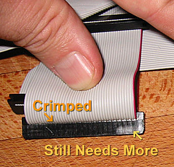
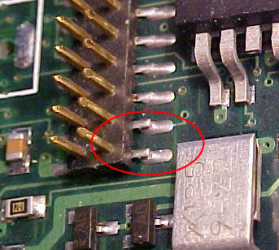
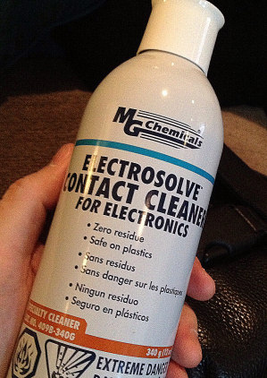

| |

rio car dot org FAQ (Frequently Asked Questions)
Category: Main -> Known problems and troubleshooting questions
| Question | · Why do the visuals disappear every time I put it in the car?
· Why is the stereo image of my MP3 messed up?
· I get a 'pump' error when I try to upgrade my player firmware.
· I get a Windows Installer or MSI error when I install Emplode.
· I'm having trouble with my tuner module!
· My tuner gets terrible reception, but the extension cable is fine.
· My tuner doesn't tune in the correct frequency increments.
· When I pause/un-pause, or sleep/wake the player, it starts in a different part of the song.
· Why don't fast forward and rewind work properly?
· When I pull the power, sometimes it plays a different song when I start it again.
· I can't perform an upgrade, install a logo, or install a kernel when the player is in the docking sled.
· Why did my player suddenly start freezing at the boot-up logo screen?
· Why isn't the headlight-sense dimmer working properly?
· Why does my player think it's at home when it's in the car?
· Why doesn't my player go into standby mode when I turn off the ignition?
· Why is there a 'thump' from my amplifiers when I turn off the ignition?
· Why doesn't my Rio Car work in my Mark 2 docking sled?
· Why is my docking connector loose?
· Why is my Mark 1 getting harder and harder to pull out of the sled?
· Why is my Mark 2 hard to pull out of the sled?
· Why is my warranty seal already broken?
· I get a 'hardware revision check failed' message when I try to upgrade!
· Why did ethernet and/or USB quit working after I upgraded the software?
· My tuner quit working after an upgrade!
· Why is the song count different when I shuffle?
· Why can't I figure out how to do searches on the player?
· I selected the correct title in a search, and pressed OK, but the song did not play. Why?
· Why does Emplode keep getting my tags wrong?
· Why can't I read the display in the daylight?
· Why am I having problems with my car alarm or my keyless entry system?
· My rotary knob is slipping on its shaft!
· What do the synchronization errors mean?
· The clock on my Mark 1 player does not work.
· The clock on my Mark 2 player does not work.
· The Mark (cancel) key on the Rio remote doesn't work all the time.
· Why is the Shuffle menu backwards?
· Why does my player say 'Waiting...' on the screen?
· Why does my player rattle when I shake it?
· I don't like seeing the circuitry when the sun shines on the player.
· I have database errors and all of my playlists disappeared!
· Why does Emplode say I have less disk space than I think I should have?
· Why does my player sound terribly distorted when I plug it into my home stereo?
· My remote control quit working!
· I have a Kenwood head unit, and its remote is controlling both players.
· Why doesn't Emplode work via USB on Windows?
· Why doesn't emplode work via ethernet on Windows XP?
· Emplode freezes up on 'Checking Disk Integrity'.
· I got an error message about 'e2fsck' at the shell prompt. What do I do to fix it?
· My docking sled's top edge is not 'bent'.
· Why doesn't my power antenna go up and down at the right time?
· The upper-left corner of my screen is cut off.
· My config.ini file went all goofy on me, and I can't edit my favorite visuals any more!
· My buttons and/or knob are sticking.
· What does the battery icon mean?
· I just tried to edit one of the visuals, and now my player locks up!
· There are glowing red lines on my display!
· My display has become garbled or dim.
· My display is blank!
· Why does my Mk2 player have poor stereo separation?
· Why doesn't my player play very high frequencies?
· Why doesn't the car player put out as much bass as my CD player?
· How do I stop it from trying to play a bad track?
· My player takes a long time to boot and says it is Building Music Databases.
· Why does it say 'No hard disk found contact support'?
· Some wires have pulled out of my docking connector!
· My handle doesn't snap back into place as well as it used to.
· My handle sticks in the 'open' position. Can I fix it?
· There is a gap between the handle and the fascia. Can I fix it?
· What is the proper way to remove the display board and the main board?
· Why can't I use USB after installing or upgrading Emplode?
· Why is my Mark 1 having intermittent power failure problems?
· Why are there pops, clicks, screeches, and stutters when I play MP3s?
· Half of my display is blank!
· In DC mode, player responds extremly slowly to button presses, and music skips.
· My Mk2's volume knob is being jumpy!
· Why do I get an error message about reiserfs?
· Why did my player wake up in the car and start blasting music all by itself?
· Why does my player start doing things all by itself?
· Why do my remote and front panel buttons only work intermittently?
· Why won't the tuner scan for the next station?
· Why did the tuner change stations on me?
· Is there a way I can test the player's hard disk for sector errors?
· Why does it always say End of Playlist?
· Is there a master parts list for the car player?
· What do the ide_data_test messages mean?
· How do I fix the Daylight Savings Time dates on the player?
· There are vertical lines on my display!
|
| Answer | · Why do the visuals disappear every time I put it in the car?
(Entry last updated on September 11th, 2002)This is probably the single most common question asked about the player.
This is by design. The company is protecting themselves from litigation. The visuals are so mesmerizing that some might consider them distracting, and therefore dangerous to have running in the car. So, by default, the player reverts to a static text display when it boots on DC (car sled) power.
It reverts to whatever the last static text display was. For example, if your last static display was "Info: Track", then it will revert to that. If your last static display was "Info: Now and Next", it will revert to that.
You can instantly toggle between visuals mode and text mode simply by pressing and holding the bottom button on the faceplate. This makes switching to the visuals your choice. So don't go crying to your lawyer when you rear-end that Ferrari because you were staring at Funnelweb.
Hey, it could be worse. They could make you answer a five-page disclaimer before switching to the visuals...
One way to avoid this feature is to use a hacked kernel that switches to a visual after the player is booted up. For information on using hacked kernels, see here. Remember that if you use a hacked kernel, you do so at your own risk.
If you are having trouble getting the Hijack kernel's "Restore DC Car Visuals" feature working, please click here. Back to Top
| | · Why is the stereo image of my MP3 messed up? If you have MP3 files with strange artifiacts in the stereo image, you might have a bad rip.
For instance, if you listen to the MP3 file and you hear instruments suddenly switch from the right channel to the left channel and back again (and assuming that the original CD doesn't sound this way), then you're probably hearing rip errors. Your particular combination of CD-ROM drive, software, and settings isn't correct for ripping CDs.
See the "MP3 Creation and Playback" section of this FAQ for more details on how to create good MP3 files. Back to Top
| · I get a 'pump' error when I try to upgrade my player firmware.
(Entry last updated on December 8th, 2008)There are several things that could cause an error while upgrading the player, but one of the most common is a corrupted ".upgrade" file.
For a certain period of time, there was a known problem with one of the ".upgrade" files on the empeg.com main web site. If you enounter this problem, try using Mark Lord's bigdisk versions of the upgrade files, linked from the drive upgrade guide.
Other possible problems are related to trouble with the serial port: Bad cable, hardware device conflicts, etc. Try performing the upgrade on a different PC or using a different cable. Make sure the serial port and cable are working correctly via Hyperterminal.
Try performing the upgrade by first unplugging the power to the player, and leaving it unplugged until the upgrade program specifically tells you to apply power to the player.
It has also been reported that a bad pump error can be caused by disk drive problems such as a bad disk drive, problems with the cable, or an inadequate power supply which doesn't provide enough juice to spin up the disk drives.
There has been at least one report of a new disk drive (in this case, a 160GB drive) which took so long to spin up that the kernel wouldn't recognize the disk properly and the pump failed when attempting to apply the builder image. The solution was to leave the power applied to the player when running the builder, and switching the power to the player on and off very quickly when the builder starts searching for the player, thus resetting the player without allowing the drive to spin down, so the kernel could find the drive and the builder would recognize it.
Also, keep in mind that when the player is running on power from the car docking sled, the player's upgrade firmware won't listen for the upgrade command. Make sure to perform the upgrade with the player running on power from the AC adapter.
Back to Top
| · I get a Windows Installer or MSI error when I install Emplode.
(Entry last updated on June 28th, 2007)If you have trouble with the Emplode installer, for instance, if you get error messages when trying to run it such as "INSTMSIA.EXE Not Found", you might need to upgrade your Microsoft Installer (MSI) engine. Click here for Windows 95/98/ME, and here for Windows NT/2000.
It also might be a corrupted download. Try grabbing it again with a download manager program.
If that doesn't solve the problem, have a dig through the Microsoft Support Knowledge Base at the Microsoft site to see what you can find. The new MSI installer is known to be a tad buggy... Back to Top
| · I'm having trouble with my tuner module!
(Entry last updated on February 18th, 2002)If your tuner module does not seem to work, if the reception is terrible despite a full signal strength meter, or you are having other strange problems, then check the extension cable.
Some cables were mis-wired. They should be straight-through (pin 1 to pin 1, pin 2 to pin 2, etc.), but a few got some of their wires crossed and were put into stock that way.
If yours is mis-wired, you can take care of the problem in one of a few ways:
- Remove the extension cable and plug the sled connector directly into the tuner module. You will lose the antenna remote wire, but some people are fine using their amp remote wire to activate their power antenna or antenna amplifier, it's up to you.
- Repair the cable yourself by swapping the pins until they are correct.
- Contact support and have them send you a corrected cable.
Back to Top
| · My tuner gets terrible reception, but the extension cable is fine.
(Entry last updated on September 29th, 2004)Some cars require that you apply power to a built-in antenna signal amplifier. The tuner module extension cable has a blue wire for this purpose. Check your wiring diagrams to locate the correct wire in your car's wiring for it.
Note that some cars (most notably, late-model Volkswagens) require a special aftermarket adapter to properly power their antenna amplifiers. Your local stereo installation shop should have access to this part if it is needed.
Also, problems with the antenna cable, such as a bad connecting adapter, a shorted ground, or a broken center conductor, can cause poor reception.
If you are using the PCATS tuner kit, please see this post for information about to repair problems with the antenna connection on the kit. Back to Top
| | · My tuner doesn't tune in the correct frequency increments. In Emplode's "Player Configuration" screen, set the correct region (Europe or United States) and synchronize. Back to Top
| · When I pause/un-pause, or sleep/wake the player, it starts in a different part of the song.
(Entry last updated on February 12th, 2002)First, make sure you're running version 2.0 or later of the software.
Next, check and see if the song is a Variable Bit Rate (VBR) MP3 file. If so, chances are that its VBR synch headers are missing or damaged.
Damaged VBR headers can be caused by several different things:
- A bad piece of encoder software.
- Cutting or splicing the MP3.
- Corrupted MP3 file (for example, one downloaded from the internet).
- Installing RealJukebox on a computer with the Xing encoder, then using the Xing encoder to make MP3s. For instance, if you install AudioCatalyst followed by RealJukebox, you will have VBR header problems.
To repair the VBR headers in the file, use either VBRFix or the VBR repair tool in MP3 Tag Studio on your original copy of the MP3 file. Then remove the bad version of the song from the player and replace it with the repaired version.
For repairing the VBR headers directly on the player, use MP3Tool. Remember to use the "reset metadata" command in Emplode on any repaired songs, and then do a re-synch to have it re-populate the data for that song based on the new headers.
Note: In my experience, VBRFix will cure certain kinds of problems with a file, and MP3 Tag Studio will cure other kinds of problems. You may have to try both and see which one does the trick for you.Back to Top
| · Why don't fast forward and rewind work properly?
(Entry last updated on June 19th, 2003)Fast forward and rewind were sketchy on VBR (Variable Bit Rate) files in version 1.0x of the software. Upgrade to version 2.0 and all should be well again.
If you've got issues with the song's time index counter (for example, the length is wrong or it doesn't seem to increment properly), and you're running 2.0 or later of the player software, you might be having trouble with VBR headers. Check and see if the song is a Variable Bit Rate (VBR) MP3 file. Its VBR synch headers might be missing or damaged.
Please click here for more information about VBR header problems and how to fix them. Back to Top
| · When I pull the power, sometimes it plays a different song when I start it again.
(Entry last updated on May 17th, 2002)When power is suddenly lost to the player, it tries to use its last dying gasp of voltage to save its current position into flash RAM. It does this job surprisingly well, considering that you've just taken away the very power it needs to do the job.
If you yank the player out of the dash, it should be able to remember its "last state" most of the time. Once in a while it will not be able to do it, and the next time you plug it in, it'll start playing at the location of the previous state-save, i.e., several songs back in the current playlist. This is normal.
If you have a huge number of tracks on your player (tens of thousands), and the player only forgets its song index when you're shuffling the whole player, then the database might have reached one of its internal limits. The number of tracks that can be indexed keeps changing with each software release as they make modifications to the database, so you could try installing the latest software to see if it solves the problem.
If the player consistently forgets its state whenever you shut off the car's ignition, then there might be a wiring problem with the installation, or you might have the Negative Spike Bug. Please click here for more details on the Negative Spike Bug. Back to Top
| · I can't perform an upgrade, install a logo, or install a kernel when the player is in the docking sled.
(Entry last updated on April 15th, 2003)When the player is running on "sled power", i.e., it's getting it juice from the docking connector instead of the home AC-adapter connector, the serial port behaves differently in two important ways:
- The speed of the serial port is reduced to 4800bps in order to be compatible with other in-car serial devices. This can be changed by adding the following entry to the player's config.ini file:
[serial]
car_rate=115200
- The player doesn't wait on the serial port for the command to write to flash memory. So upgrades, flash writes, etc., do not work. This happens in the protected boot firmware, the hard-coded routine that runs the instant the player is powered on. So even a custom kernel which forces the player into AC mode can't change this behavior; the upgrade prompt happens before the kernel is loaded.
Most of the time, you should be upgrading the player simply by bringing it into the house and plugging it into your PC as it was intended. However some people have done interesting things with docking sleds indoors, so there can be situations where you need to do upgrades through the docking sled.
You can work around this problem by faking the player into thinking it's on AC-adapter power. One way to do this is to plug an "unwired" plug of the correct dimensions into the home power jack. If you're careful, you can also trigger the jack's sensing switch with a matchstick or similar non-conductive object. Although I wouldn't recommend it because you might damage the switch mechanism if you're not careful, and it's a pain to replace it.
It's also possible to design an indoor dock which uses the AC adapter jack for power instead of the docking connnector.
Another thing to remember is that the serial port on the docking sled has some rather funky wiring. For starters, the RX and TX pins (pins 2 and 3) are already "swapped", so you can't use the supplied null-modem cable to connect a PC to the docking sled's serial connector, your cable must have the data pins wired as straight-through. Next, some sleds were accidentally wired without a ground connection on pin 5 and you will need to come up with a makeshift solution, such as grounding your serial cable to the docking sled. Finally, some of the other pins are connected to special features such as the amp remote, the headlight sense, and the mute line. These might confuse a PC serial port. So if you need to hook your PC up to the docking sled, the best solution is probably making a custom cable that uses only pins 2, 3, and 5 (RX/TX and Ground), which are the only pins needed for PC-to-player serial communication.Back to Top
| · Why did my player suddenly start freezing at the boot-up logo screen?
(Entry last updated on June 5th, 2002)Freezing at boot-up is commonly associated with disk drive trouble. Versions of the software prior to 2.0 did not display an error message if there was disk trouble, it just froze. Please click here for more details on disk drive trouble. Back to Top
| · Why isn't the headlight-sense dimmer working properly?
(Entry last updated on March 2nd, 2005)Assuming that you own a Mk2 or a Rio Car (the Mk1 did not have a dimmer), and assuming the player has been installed in the car and wired correctly (the dimmer feature only works in the car), you might just need to set the dimmer levels properly.
There are two levels, which you set from the "Settings" menu on the player while it's plugged into the car. The player doesn't know if your headlight line goes high or goes low when the lights are on. So just do the following:
- Get the player running in the car.
- Turn your lights off.
- Go into the settings menu, set the level to 100%, and exit the menu.
- Turn on your lights.
- Go into the settings menu, set the level to 70% (or whatever you want), and exit the menu.
After that, assuming your wiring is correct, it should work properly: When the headlights are off it should be at 100 percent, and when the headlights are on, it should be at 70 percent (or whatever you set it to). If not, contact support.
If, when setting your dimmer, the display seems to flicker erratically or select random levels of brightness, this is a known problem with some players. It can be fixed by soldering a capacitor onto the proper pins on the display board. Contact support and let them advise you as to whether or not you need this fix. If you do need the fix, they can help you decide whether or not to do the fix yourself or if the player should be sent in for repair. Details here, and there is a movie of the repair procedure here (3.14mb mpeg). The part used to make the repair is a .01uf (10nF) surface-mount capacitor.
WARNING:
Do not attempt to do any soldering on the player unless you have experience with soldering delicate surface-mount devices. There is a real possibility that you could permanently ruin the unit if you are clumsy, if you use too much heat, or any number of other mistakes. You're better off contacting support and having them do it for you.
|
Note: if your Mk2/Rio player doesn't have a "Dimmer" menu option in the car, you might have a problem with the sensor switch on the power connector. Contact support to have it repaired.
If your display is simply too dim all of the time, please check here and here for possible issues with the display brightness.Back to Top
| · Why does my player think it's at home when it's in the car?
(Entry last updated on September 17th, 2007)The player uses a small switch on the AC adapter jack to determine whether it's running on home power or car power. On some players, this switch fails, causing the player to think it's either permanently in home mode or permanently in car mode.
Usually, it sticks in "home" mode, so you'll probably notice this when it happens the first time because you'll nearly have a heart attack when you start up the car and the volume will be at maximum (home 0db setting). You will also notice that the player doesn't shut off when you turn off the ignition.
Some things that you can check to make sure that this is really your problem:
- In the car, there should be a "Fader" option in the "Sound" menu. This option will not be present when the unit thinks it is plugged into its AC adapter.
- In the car, you should have a "Dimmer" option under the settings menu if your player is a Mk2 or a Rio Car. This option will not be present when the unit thinks it is running on AC power.
One other thing... The Hijack kernel has an option to force the player into AC or DC power mode. Make sure you haven't accidentally set this option, or did it on purpose and forgotten about it.
There is also a chance that either a diode or a transistor in your player has been blown by applying incorrect current to one of its DC inputs. Please click here for more information.
If your player has a faulty AC sensor switch, then contact support to have it repaired.
To repair it yourself, you must be able to completely disassemble the player as described here, and, as usual, be really good with a soldering iron (or more importantly, good with a desoldering tool, since you have to remove the old connector without damaging the motherboard). The replacement part is Digikey part number SC1153-ND, Switchcraft part number RAPC722, RS Electronics part number 286-8779, and in Germany, Reichelt part number HEBW 21. Note: Switchcraft item NOT VERIFIED yet, order at your own risk.
WARNING:
Do not attempt to do any soldering on the player unless you have experience with soldering delicate surface-mount devices. There is a real possibility that you could permanently ruin the unit if you are clumsy, if you use too much heat, or any number of other mistakes. You're better off contacting support and having them do it for you.
|
There is a temporary software-only work-around to this problem, but it requires that you have a tuner module installed in the car. You can install a recent version of the Hijack kernel and use its "Force AC/DC power mode" feature in conjunction with the tuner ID setting as follows:
If you own an original factory tuner module, set its ID selector wheel to some number from 1 through 5. Then go into Hijack and set "Force AC/DC Power Mode" to "If tuner=1, Force DC/Car". If you have selected a different number, then of course use that number. If you move the player between more than one car, set the tuner ID to be the same on all of those tuner modules.
If you own a PCATS tuner module kit, chances are you built it to the default specification without changing the hard-wired ID number, since the ID number is set internally with jumpers. By default, the PCATS kit is ID=3. So if this is the case, set it to "If tuner=3, Force DC/Car". If you have a tuner module connected to a home docking station, make sure to set the ID of that module to something other than what the car module(s) are set to.
This work around is not 100 percent perfect, though. When the switch is malfunctioning, the power control PIC still thinks the player is in AC/Home mode because the kernel hack can't talk to the PIC. So when you turn off the car's ignition, your player will still not drop into standby mode nor shut down completely. In some installations, this could potentially cause speaker-damaging "pops" if the player is still playing music when you pull it from the sled or re-start the ignition. So you have to remember to put the player into standby mode yourself before doing these things. You also have to remember to pull it out of the sled to prevent it from draining the car battery. So you still need to get the switch repaired as soon as possible even if you use this work around.
Other things that might cause the player to mis-detect the AC/DC environment:
- Problems with a resistor, diode, or 74LVX04 hex inverter IC on the mainboard, all associated with the DC power jack.
- Problems with Hijack's dock detection, which uses a loopback wire on the tuner pins to decide whether it's in a home dock or not. Make sure you're not having this problem, and check to see if the player works correctly with a stock kernel as opposed to a hijack kernel.
- Problems with a bad serial port driver chip, causing Hijack to be confused by random data on the serial port. Check to see if the player works correctly with a stock kernel as opposed to a hijack kernel.
More information on those problems can be found in BBS threads here and here.Back to Top
| · Why doesn't my player go into standby mode when I turn off the ignition?
(Entry last updated on March 25th, 2013)First of all, this feature only exists on the Mark 2 and Rio Car players.
Second, make sure your player is installed and wired correctly:
If you own a Mark 1 player, it has only one power wire. This wire should be connected to the car's ignition-switched line so that it fully powers off when the ignition is turned off.
The correct wiring scheme for Mark 2 and Mark 2a players is as follows: Yellow sled wire connected to constant 12-volt power source. Orange sled wire connected to ignition-switched wire that provides 12 volts when the ignition is turned on.
With a correctly-wired Mark 2 or 2a unit, when you turn off the car's ignition, the player should drop into standby mode for a few minutes before shutting off completely.
If the player keeps on playing when you shut off the ignition, you may have the 12v permanent power swapped with the 12v ignition-switched power. Volkswagen and Audi cars are notorious for this problem, since they swap those lines on the DIN connector. Simply swap the pins on the wiring harness to fix it.
Also check for wiring problems blown fuses. Sometimes a blown fuse can cause this behavior, such as the inline fuse on the yellow permanent 12v power wire. loose wires in the docking connector can also cause this.
Another common reason the player might keep playing when you turn off the ignition is the AC sensor switch problem described here. Check for that.
There was a bug in some older software revisions which might have caused the player to keep playing when the ignition was turned off, so make sure you've updated to the latest player firmware. Also, there have been a couple reports of this problem which were cured simply by doing a synch with Emplode, so try that, too.
If the player goes into full-power-off mode instead of standby mode (and assuming you don't have any blown fuses or mis-wired connections), you probably have the Negative Spike bug as described here. You also might have simply configured a very short timeout value (such as one second) in the "Configure Player" screen in Emplode.
Some users have reported that hard disk trouble will prevent the player from going into standby mode when it is supposed to.
Back to Top
| · Why is there a 'thump' from my amplifiers when I turn off the ignition?
(Entry last updated on March 2nd, 2005)Although there are many reasons that you might get a thump (most of which involve cheap amplifiers, blown fuses, or incorrect wiring), one of the most likely causes is the Negative Spike Bug.
A minor problem was discovered after the shipment of the initial batch of Mark 2 players: Some cars produce a large negative spike on the ignition wire instead of just going to zero voltage when you shut off the ignition. This unexpected behavior confuses the player's power control circuitry, causing strange behavior when you shut off the ignition.
Other symptoms of this problem include the unit forgetting its song position and/or going straight into full-power-off mode (rather than standby mode) when you shut off the ignition.
If you have this problem, contact support. They can send you an adapter plug which includes a diode to prevent the negative spike from reaching the player.
If you want to do it yourself and install your own diode, solder a 1N4003 (1a, 200v) inline in the ignition sense wire with the stripe towards the player, as shown:
Remember to use shrink-tubing to cover the entire assembly when you're done, as it wouldn't be good to have your ignition wire shorting out.
If desired, this diode modification can be done inside the player instead of on the external wiring harness. A movie of the internal procedure can be found here (10.6mb mpeg).
This problem only existed on the Mark 2 units. The Mark 2a (Rio Car) units have the diode built-in, so the fix will only be needed on some players, and only when they are installed in certain cars. The Mark 1 units did not have separate ignition and constant-power wires, so they will not be affected by this problem, either.
Back to Top
| · Why doesn't my Rio Car work in my Mark 2 docking sled?
(Entry last updated on March 25th, 2013)If you have a Mark 2 player which seems to work correctly, but a Rio Car won't work when plugged into the same docking sled, there is probably a blown fuse or some kind of wiring error.
The correct wiring scheme for both players is as follows: Yellow sled wire connected to constant 12-volt power source. Orange sled wire connected to ignition-switched wire that provides 12 volts when the ignition is turned on.
The player is supposed to go in and out of standby mode when you turn the ignition off and on. You can tell because the front-panel LED will be pulsing on and off when it's in standby mode. If it goes completely dark when you take the key out, then it's not going into standby mode at all. See here for more information on standby mode.
The Mark 2 will seem to work when only the ignition wire (not the constant power) is functioning. If a Mark 2 player is mis-wired or has a blown fuse on its constant power line, it will still play music when the ignition is turned on. It will get its power from the ignition wire. It just won't go into standby when you pull the key. This might fool you into thinking it's working OK.
The Rio Car, on the other hand, will refuse to work at all if it only gets power on the ignition wire. It requires that the constant power line is always getting a proper 12 volts. If the constant power line is mis-wired or it has a blown fuse (including its inline fuse-- remember to check that, too), it will simply not work at all.
Also check for this problem with the docking sled wires.
Back to Top
| · Why is my docking connector loose?
(Entry last updated on April 22nd, 2002)It's normal. All full-pull-out stereos have that feature. On other stereos, sometimes the wiggly part (technical term) is on the sleeve instead of the stereo. It allows the stereo to connect to the docking sleeve smoothly and easily. Without this feature, you'd have a heck of a time inserting the player.
Note that this doesn't mean the screws should be loose. The screws themselves should be tight. They are a special kind of screw that, when tightened down completely, still allow the docking connector to wiggle.
Some users have reported that the screws worked loose on their players, causing the docking connector to come completely disconnected from the player. This made it difficult to pull the player from the car docking sled, and also caused the wiring harnesses to pull loose from inside the player. If this happens, hopefully the only damage was the internal connectors being pulled from the motherboard, and they simply need to be plugged back in. Contact support if you need help with this. Back to Top
| | · Why is my Mark 1 getting harder and harder to pull out of the sled? If you look at the sides of the player, you will notice that the scratches from the side guide-bumps are turning into rough gouges instead of faint scratches. My work-around was to bang on the sled's side-bumps with a hammer (from the inside out) to loosen them up.
They fixed this problem on the Mark 2 by redesigning the sled slightly, after seeing Brian Mihulka's work-around. Brian made some C-shaped cuts around the side bumps in the sled. This is how the Mark 2's side bumps are now implemented.
If you wish to make these cuts on your Mark 1 sled, here is what it looked like when Brian modified his sled:
 Back to Top
Back to Top
| · Why is my Mark 2 hard to pull out of the sled?
(Entry last updated on March 31st, 2003)There are several reasons that your Mark 2/Rio Car might be tough to pull out of the sled, but the most common problem is loose docking connector screws.
Check and tighten the two screws that hold the docking connector to the back of the player. They should be tight. Note that the docking connector is deliberately designed to wiggle even if the screws are tight (see here for details).
Some users have reported that the screws worked loose on their players, causing the docking connector to come completely disconnected from the player. This made it difficult to pull the player from the car docking sled, and also caused the wiring harnesses to pull loose from inside the player. If this happens, hopefully the only damage was the internal connectors being pulled from the motherboard, and they simply need to be plugged back in. Contact support if you need help with this.
Other possible causes for difficulty would be loose screws on the sides of the case, a sled that's bent or installed crooked, or the sled's keeper tabs bending inward and interfering with the player's casing. Back to Top
| · Why is my warranty seal already broken?
(Entry last updated on July 21st, 2003)Don't worry about it. The casing flexes and breaks the seals even if the player was never opened. This was a known issue, and when the players still carried a warranty, they didn't refuse a warranty claim based on the condition of the seals alone.
Back to Top
| | · I get a 'hardware revision check failed' message when I try to upgrade! Chances are, you downloaded the wrong upgrade file. For instance, you have a Mark 2 or a Rio Car unit, but you downloaded the "car1" version of the upgrade file.
Make sure you get the correct file for the unit. If you have a Mark1, it has "car1" in the file name. If you have a Mark 2 or a Rio Car, it has "car2" in the file name. Back to Top
| · Why did ethernet and/or USB quit working after I upgraded the software?
(Entry last updated on April 10th, 2003)You may have installed the software upgrade for a Mark 1 player onto your Mark 2 or Rio Car player. Re-download the upgrade file, this time make sure to pick the one that says "Car2" in the filename.
Also check here for another possible reason USB might have quit working.
For general ethernet troubleshooting, see here. Back to Top
| | · My tuner quit working after an upgrade! Probably same as USB/Ethernet, above. Odds are, you're using the wrong upgrade file. Back to Top
| · Why is the song count different when I shuffle?
(Entry last updated on March 4th, 2003)You might notice that the number of songs in a playlist will change when you turn Shuffle on and off.
At the bottom of the screen in "Info:Track" mode is an indicator showing the position and the total songs in the current running order. For instance, it might say [43/2573] in non-shuffled mode, and [38/2298] in shuffled mode.
This is on purpose: The player de-duplicates the current playlist and sub-playlists when it shuffles. It's so that you won't accidentally hear the same song twice in a row.
Let's say you've got a playlist called "Rush" that contains all of your Rush albums. This playlist is underneath your "Rock" playlist. But maybe you copied it into your "Heavy Metal" playlist, as well. And perhaps you also copied a few of the tunes to your "Favorites" playlist. Now let's say you play the whole contents of the player (by pressing down-down-down on the front panel). If Shuffle is turned off, it will play the songs three times total as it reaches each of those three playlists in turn. But if Shuffle is on, it will only play each Rush song once, because duplicates were removed before shuffling.
It goes by the File ID (FID) when de-duplicating. So if you've copied the song to multiple playlists (within emplode), those copies are counted as duplicates. The player does not make extra physical copies of a song when you copy tracks within emplode. However, if you have purposely or accidentally uploaded the song onto the player twice, then the song has a different FID and is not counted as a duplicate. Please click here for more information on how the player handles multiple copies of the same song.
Two different versions of a song which happen to share the same title (for instance, a studio recording and a live recording) will be considered two separate songs and will not be dupe-removed.
In other words, it does The Right Thing.
If you dislike this feature, you can disable it by adding the following entry to the player's config.ini file (works only with version 2.0 and later of the player software):
[shuffle]
deduplicate=0
Also note that using Wendy Filters, Tweak Order, Ignore as Child, or putting a song in the soup without putting it into a playlist may change the total number of tracks displayed.
Back to Top
| · Why can't I figure out how to do searches on the player?
(Entry last updated on January 11th, 2002)You're probably misunderstanding the way the fuzzy searches work.
Let's say, for example, that you want to Search by Title for "La Villa Strangiato".
- Press the Search button on the Rio remote (or on the Kenwood remote, the Direct/OK button). Press it a total of three times to reach the Search by Title screen.
- Press the 5 key on the remote, which corresponds to the letters "JKL".
- Now at this point, you probably think that you need to press the 5 key twice more to reach the L's. That's where you're going wrong. You don't cycle through to the L's. By pressing the 5 key, you have already sorted all titles beginning with J, K, and L.
- Instead, press the 2 key, which corresponds to "ABC" on the remote. This further narrows the search.
- Now press the 8 key on the remote, which corresponds to "TUV".
- Note that we have skipped the space. The search algorithm automatically skips spaces and special characters.
- By this time (three presses), everything starting with "LA V" or "LA T" or "LA U" is on the screen. For instance, on my player, two songs are up: "La Tonya" and "La Villa Strangiato".
- At this point, you can either scroll down to the desired title, or press more letters (in this case 4 GHI) to further narrow the search.
- Press OK on the Rio remote (or DNPP on the Kenwood remote) to select the title.
See? It's like dialing a telephone number. You don't cycle through each letter. Instead, you pretend you're trying to dial 1-800-LAVILLA, blasting through each letter without dwelling on it.
Now, if you're in the player's Playlists menu, and you want to scroll to the L's, then you do press the 5 key three times. The letter-shortcuts in the playlists menu work differently than the searches.Back to Top
| · I selected the correct title in a search, and pressed OK, but the song did not play. Why?
(Entry last updated on July 24th, 2002)You weren't in "Replace" mode. Your search worked, and the search result was added to the current playlist. It's just queued up somewhere after the current song.
The search screen gives you multiple options for searching: Replace, Append, Insert, and Enqueue.
While you're in the Search screen, press the "Select Mode" button on the Rio remote (or the CD-MD-CH button on the Kenwood remote). You will see it cycling through these modes.
They work as follows:
- Insert: Inserts the selected item immediately after the current song.
- Enqueue: The first time you select this option, it inserts the selected item immediately after the current song. If you do this multiple times, it will insert the results after your last insert. Sort of like queing up songs on a jukebox.
- Append: Adds the selected item to the very end of the currently-playing list of songs without interrupting playback.
- Replace: Completely throws out the currently-playing list of songs and instantly plays the selected item.
This is useful as a sort of a "DJ" feature. It allows you to insert "requests" without interrupting your current playlist. It also lets you build playlists on the fly without interrupting the music.Back to Top
| · Why does Emplode keep getting my tags wrong?
(Entry last updated on November 18th, 2010)First, make sure you're using the latest version of Emplode. Its tag-reading features are frequently updated to take advantage of new tagging specifications.
But even with the latest version, sometimes you will drop a song onto Emplode and it will seem to read the wrong tag data. For instance, you might think you fixed a typo in the song's tag, but the typo comes back when you drop the file onto Emplode.
This is probably because of a conflict between V1 and V2 tags, or maybe it's because of nonstandard file formatting.
It could also be caused by unicode data in your tags, which isn't supported by Emplode. Before going any farther, make sure that your ripping or tag editing software is not configured to write Unicode characters to your tags.
There are two types of ID3 tags you can put on a file:
- ID3 Version 1: Fixed-length fields totalling 128 bytes appended to the end of the file, immediately after the last MP3 frame. The text fields are limited to 30 characters each, and the Genre is limited to a fixed list of styles represented by a single byte.
- ID3 Version 2: Variable-length fields inserted anywhere in the file. There is no limit to the length of the fields, and the Genre can be free-form text. There is an open specification for adding any kind fields you like. Unicode characters in V2 tags can sometimes be supported by some applications (although not by Emplode).
If you are using V2 tags, they should be encoded to the ID3v2.3 ISO-8859-1 standard. Other standards, such as ID3v2.3 UTF-16 and ID3v2.4 UTF-8 should be avoided, as they are not compatible with Emplode 2.00.
If there is a Version 2 tag present that fits the ISO-8859-1 standard, Emplode will use it in favor of a Version 1 tag. Even if the V2 tag is wrong and the V1 tag is right.
This sort of thing usually happens when you use a piece of ripper software that's V2-aware, but edit your tags later in a V1-only tag editor. To the tag editor, it looks like you're doing the right thing, and it blissfully ignores the V2 tag embedded in the file.
The opposite situation can happen when your file contains a V2 tag that isn't understood by Emplode, such as such as ID3v2.3 UTF-16 (which uses double-byte character sets). You might carefully edit your V2 tag, only to have Emplode skip the double-byte V2 tag (which it can't understand) in favor of the V1 tag.
Generally, you can use MP3 Tag Studio, MP3Trim, TidyMP3, or even a recent version of WinAmp to remove the unwanted tag data and re-save the cleaned version of the file, then add your own V1 or V2 tag to the cleaned file. That usually takes care of the problem.
However...
If you really did change/strip the V2 tag, and you're still having this problem, then it's probably due to the files having a bad format which includes multiple (or possibly corrupted) V2 tags. Your tag editor isn't catching the second (or corrupted) V2 tag, but Emplode is. It's also possible that the file contains some spurious ASCII data that isn't even a proper tag at all, such as lyric text appended to the end of the file. I've seen this on some files created by a nonstandard encoder.
If this is the case, then you're going to need to strip the bad data out of the file yourself.
First, try running the file through TidyMP3. Bad data, such as incorrectly-formatted tags, JPG images, lyric text, etc., will be removed. Now, retag the file with any tag-editing software you like, such as WinAmp, MP3 Tag Studio, etc.
If this doesn't work, open the file in a binary editor such as UltraEdit. Locate the bad data (usually, it's near the end of the file, right before the V1 tag), and delete it from the file, or change it to all zero bytes. This should take care of it once and for all.
Back to Top
| · Why can't I read the display in the daylight?
(Entry last updated on August 13th, 2003)If your player uses the green or blue lens, you should be able to read it in daylight, assuming your dimmer (found in the Settings menu) is turned up to 100%. Check your dimmer setting first.
(Note: The dimmer is not available on the Mk1 player, its display is always at full brightness.)
If the sun shines directly on the face of the player, then you probably won't be able to read it. I can read mine in this situation, but it's very hard. In normal, ambient sunlight, though, the green and blue lenses should be adequate for general readability.
Color
The amber and red lenses will be somewhat harder to read in ambient daylight than the blue and green lenses. The problem is that the VFD (Vacuum Fluroescent Display) is greenish-blue in tint, so the green and blue lenses have the most contrast.
The lenses, in order of readability, from best to worst, are: Green, Blue, Amber, Red. Note that the red lens is only available for the Mk2 and the Rio Car.
Please click here for a chart comparing how all the colors look in different lighting conditions.
AR Coating
Early shipments of Mk2 units were mailed with lenses that were not coated with an anti-reflective (AR) coating. If you have one of these non-AR lenses, and you think that the AR coating will help you read the screen in daylight, you can contact support and they will replace the lens with an AR-coated one.
If your faceplate is non-AR, you will be able to tell because it is very shiny. If it appears to have a slight matte coating on it, then it's an AR faceplate already and there's no issue. In practice, it makes only a small difference in readability.
Faulty VFD
Some Mk2 owners have had a problem where a capacitor in the dimmer circuit has failed. This causes the display to be quite a bit dimmer than normal.
How to tell: If you are in the car at night, you should be able to turn your dimmer down all the way to 0% and still read the display. If it goes completely black when you turn it down to 0%, then you probably have a faulty display. Contact support for a repair.
If you wish to test this in more detail, here are Hugo's instructions for performing the actual test:
On the back of the display board are 3 through-hole components - with the display towards you, there are 2 caps on the left and an inductor on the right. The leg of the righthand capacitor nearest the inductor is the display anode power (this is also connected to TP1, which is labelled "60V" on the PCB just below this leg).
With the display at maximum brightness, this leg/test point should be around 60v - test against ground, ieee the case of the empeg - (i.e., in the range 57-63v). If it's any less, the display will be dimmer than it should be. Some of the displays we had back were in the range 12-25v.
WARNING! 60V is nasty voltage, it can give you a snap! Don't run your empeg with the top off unless you really know what you're doing!
The cap in question is a 100nF one which stabilises the reference voltage for the 60v PSU switcher. It's under the display, connected to pin 5 of the MAX770 chip (near the rotary control). In all the cases we've had, this one fails for some reason and as such the display PSU goes very low; there is a patch to the PCB near here for another reason on empeg (not Rio) units, which may explain why the cap has failed (too much heat when the assembler was soldering the other components on?).
Blown Motherboard Fuse
Sometimes the display might be dim because of a blown fuse on the motherboard. Please see this entry for details on how to locate and test the fuses.
Dimmer Circuit Problems
Some units have had problems with the dimmer circuit, causing the display brightness to flicker erratically when setting it. Details and repair information for this problem can be found here.Back to Top
| | · Why am I having problems with my car alarm or my keyless entry system? The player does emit a very small amount of RF interference when operating, which has been known to reduce the range of certain keyless entry systems. This can be worked around pretty easily (read on).
Please note that the player has been fully FCC tested and is completely compliant with all regulations for emissions of in-car electronic devices. The keyless entry systems for most cars operate at extremely low power levels, so simply looking at them sideways can cause interference. A very tiny amount of interference can have a huge effect on a keyless entry system.
If desired, you can try re-routing the stereo connection wiring behind your dash. I noticed significant changes in the range of my keyless entry system when I did some rewiring work on my player.
The quick and easy solution is to reduce the standby timeout (found in the "Shutdown" tab of the "Configure Player" screen in Emplode) to five seconds or less. If the player is wired correctly, it will power off shortly after you turn off your ignition, and will no longer produce RF interference. Your keyless entry system will work normally now.
Some car alarms will trigger when they sense a change in the electrical system's voltage. When the player goes into full shutdown mode after being in standby mode, it might set off certain kinds of alarms. In this case, the solution is the same as above: Reduce the standby timeout so that it shuts down before the alarm arms itself.
Note: The Mark 1 players have only one power wire. Mark 1 players should have their power wire connected to the car's ignition-switched wire, which makes them shut down completely when you turn off the ignition. This will prevent the Mark 1 from interfering with your alarm or your keyless entry system. Back to Top
| · My rotary knob is slipping on its shaft!
(Entry last updated on February 18th, 2002)Some early Mark 2 models were shipped with a less-than-perfect rotary knob, which doesn't grip the encoder shaft as tightly as it could. Eventually, it would start to slip, especially when hot.
If you're having this problem, contact support and they will send you a corrected knob.
Do not attempt to glue the knob, as you won't be able to remove the faceplate without damaging the encoder if you do.
(Some have applied glue to their knobs successfully by letting the glue dry before putting the knob onto the shaft. Although this will work, I do not recommend it because it's easier simply to get a new knob from support.) Back to Top
| · What do the synchronization errors mean?
(Entry last updated on October 17th, 2009)Those cryptic numbers and letters are hexadecimal notation, and they refer to a numeric error in a lookup table.
Emplode should be very, very stable in final releases, and for the most part, you shouldn't encounter synch errors. If you're using the latest non-beta software, and you can reproduce the error, please e-mail support with the details.
If you want to know what the errors mean, here are instructions written by Roger on how to look it up, or you can use Trevor Man's error code lookup script.
Although knowing the meaning of the error code won't solve the problem, sometimes it can help you narrow it down. For instance, if you get a "No such file or directory" error, you could maybe start looking to see if the file you're uploading was deleted accidentally.
Some known errors and their resolutions:
Error 0x80072736, "An operation was attempted on something that is not a socket". If this happens during the "Writing player configuration" stage, it means that the player crashed during the synch, after the music was uploaded, and it was rebuilding the database and writing the player configuration. One of the known causes of this is having too many songs and playlists on the player. Without customization, the player will hit this after 28,672 FID entries (songs and playlists). Locate the "set_empeg_max_fid" utility on the Empeg BBS. Thread about the problem is located here. Back to Top
| | · The clock on my Mark 1 player does not work. The Mark 1 doesn't have a real-time clock circuit. Only the Mark 2 has a clock.
In theory, you could use the RDS time feature to grab the time from a radio station that's broadcasting it. Although this might work reasonably well in Europe, US stations tend to have poor support for this feature and often broadcast an incorrect time.
Look on the bright side. It's one less clock you have to set. Back to Top
| · The clock on my Mark 2 player does not work.
(Entry last updated on February 25th, 2002)It should work... Check the following:
- Make sure you are running version 2.0 of the software or later. The clock features were only fully implemented in that version.
- To display the clock, either show one of the clock visuals, or, if you're in Info:Track, Info:Line, or Info:Now and Next, press the 1 key on the remote control to select the clock as your time display.
- Make sure you have correctly set your Time Zone from the Settings menu. After setting the Time Zone, then re-set the clock again.
- If you are tuned to the radio, and you are in Info:Radio mode, the clock displayed on this screen is the RDS (Radio Data Service) clock from your radio station. This might be wrong (in the USA, it is very likely to be wrong if it even appears at all). There is nothing the player can do about it if the radio station hasn't set their clock correctly. Change the display to something other than Info:Radio so that you can see the player's built-in clock instead.
- When was the last time your player was plugged into a power source? The clock should be able to keep correct time for several days after the player has been unplugged. If it's been left without power for longer than that, the clock time will be lost until the next application of power.
If the clock still has problems after checking all of the above, contact support. Some players have a bad capacitor, causing the clock to be reset each time the player is unplugged.
Back to Top
| | · The Mark (cancel) key on the Rio remote doesn't work all the time. The Mark Track feature (labeled as being part of the Cancel button on the Rio remote) has a feature to prevent you from accidentally marking a track.
If you have just canceled out of the main menu, successive presses of the button won't mark the track for a couple of seconds after you came out of the menu. You have to wait.
This is just in case you are canceling out of the main menu by pounding on the Cancel key several times. This way, you don't inadvertently mark the current track.
The 4 key also doubles as the Mark Track key if you want to use it for marking. This key is not time-limited. Back to Top
| | · Why is the Shuffle menu backwards? In version 2.0 and later of the player software, when you select the "Shuffle" menu on the player, at first glance, it might seem backwards.
For instance, if you are currently using one of the shuffle modes, when you open the Shuffle menu it will show "Off" selected. "But shuffle is on", you say. That's because the menu is showing you what will happen when you click it, not what the current shuffle mode is.
The reason it does it this way is so that it's easier to toggle the shuffle mode from the front panel. The default menu selection will always be the opposite of what you selected, so that the exact same keystrokes (down right down down) can be used to toggle the shuffle mode every time. This way, you can turn shuffle on and off without the remote control and without taking your eyes off the road. Back to Top
| | · Why does my player say 'Waiting...' on the screen? The "Waiting..." message indicates it's set to the the Aux input, and it's waiting for some music to be played in order to display the time length of the track. You probably want to switch to another source input.
The messages you see on the screen for the Aux input can be configured using Emplode 2.0 and later. Back to Top
| · Why does my player rattle when I shake it?
(Entry last updated on January 16th, 2002)This is normal. Laptop hard disks simply do that. They make a rattling noise when they are shaken, it does not indicate a problem. The labels on some laptop hard disks even have a message which says something like "rattling noise is normal".
Also, if you own a Mark 2 or a Rio Car player, and you only have one disk drive installed, the header for the second IDE slave drive is loose inside the case. If you shake the player, you might hear the sound of that rattling as well. This is also normal and is nothing to worry about.
Note: This is not to be confused with the obvious and unmistakable sound of a loose screw rattling around inside the casing of the player. If you really do have a loose screw, it is critical that you fix the problem right away before applying power to the player again. If the screw contacts certain components on the motherboard when powered, it could cause permanent damage to the player. If you have a loose screw, and it turns out to have been one of the drive-mounting screws, make sure to tighten all the screws securely and use threadlock compound or some other means to ensure that they don't come loose again. Back to Top
| · I don't like seeing the circuitry when the sun shines on the player.
(Entry last updated on June 30th, 2005)If the sun shines directly onto the face of the player, you can see some of the circuitry through the translucent lens. If it bugs you, there are a few different ways to work around this.
The first is the "Magic Marker Mod". You use a black permanent marker (I used Sharpie brand Fine point and Ultra Fine point markers) to blacken certain shiny parts of the front panel, making it harder to see them in direct lighting. This was first mentioned on the Empeg BBS here.
Because some of the shiny parts are under the VFD glass, this also involves blackening the front of the VFD glass itself. If you do this, be extremely careful about the parallax angle for viewing the actual pixels of the display. Make sure to use a straightedge when coloring the edges of the VFD. Also make sure not to color the window of the IR sensor, or the domes of the IRDA transceiver.
Pictures of the Magic Marker Mod can be found here.
Another option is to print a "mask" onto overhead transparency material using an ink jet printer. Cut this mask to the same shape as the colored lens, then insert it under the lens. A thread about this subject, including template files for Corel Draw, can be found on the Empeg BBS here.
Another fun option is to use black electrical tape on the inside face of the colored lens. It may take some trial and error to cut the tape to the desired shape. Remember to leave a hole for the IR sensor.
Finally, for the ultimate in coverage, you can cut a mask out of black plastic:
This method works really well to hide light overspill from the custom lit button kits.Back to Top
| · I have database errors and all of my playlists disappeared!
(Entry last updated on June 20th, 2002)If your playlists have suddenly gone bye-bye (you go to select a playlist and it simply says "none"), and you have a two-disk-drive player, there might be a problem with the second disk drive or the cable.
If the playlist files happen to have ended up on the second disk drive, and the second disk drive goes down, then the player will seem to boot up and work, but may get strange problems such as database errors and the lack of playlists appearing in the menu. Another possible symptom is that the player locks up during boot at the "building music databases" stage.
See here for more information about possible problems with the disk drive cable. Back to Top
| · Why does Emplode say I have less disk space than I think I should have?
(Entry last updated on February 24th, 2002)Let's say you've just bought a shiny new 20gb Rio Car. It's blank, there are no songs on it yet. You run Emplode, and it tells you that you've only got about 18.5gb of free space. What gives?
There are a few things at work here:
- Disk drive manufacturers are rotten filthy stinking liars who are trying to rip you off as hard as they can. They are truly evil, and they should all be rounded up and thrown in jail for complete fraud and misrepresentation.
When a disk drive manufacturer says "20 gigabytes", it is a flat-out lie. They interpret the term gigabyte to mean "1,000,000,000 bytes". This is false. It is a convenient semantic trick which allows them to artificially inflate the size of the disk drive on the label.
I don't know what color the sky is on their planet, but here on Earth, a gigabyte is 1,073,741,824 bytes. A significant difference.
Emplode reports true numbers, not fantasies and wishful thinking.
- The player stores a significant portion of the operating system and software on the hard disk, in a 32 meg partition that's separate from the music. There is also a spare 32 meg partition reserved for future software development. So in total, about 64 megabytes gets used for software.
- The player maintains a 16 megabyte "scratch" partition, a section of the hard disk reserved for storing run time data such as the equalizer preset details, and the running order of the music. This is part of the system which allows the player to pick up right where it left off when you plug it into the car (the other part is a small amount of flash RAM to store its state when power is lost).
- There is a 16 megabyte "swap" partition, used when Emplode performs a disk check on the player.
- All operating systems require a certain amount of overhead for organizing partitions and for indexing each file on the disk.
So after that's all totaled up, you end up with less disk space than you expected.
Also note, that when you're dropping new files onto emplode, a "fudge factor" is added to the size of the files to compensate for the fact that they don't know exactly how much disk space each file is actually going to consume. So a large group of new files may appear to eat more space than you think they should. But after you complete a synch, the free space number is accurate again.
Important: If you just added a folder's worth of new files to your player, and they seem to have consumed twice as much disk space as you expected them to (for instance, you dragged a 5gb folder onto Emplode, and the player's free space dropped by 10gb), the files might have been added twice. You probably had .M3U playlists pointing to the files, right? There's an option in Emplode 2.0 which allows you to import .M3U files. So each file probably got added twice: Once because you dropped the folder onto the player and once because you dropped the .M3U file onto the player.
To locate the doubled files, either use the "all tracks" view, or do an advanced search on "refs=0" to list all tracks that aren't in playlists. To prevent the problem from happening in the future, go to Tools/Options/Import in Emplode and disable the "Import playlists" and "Follow Windows Shortcuts" features.
Back to Top
| · Why does my player sound terribly distorted when I plug it into my home stereo?
(Entry last updated on January 7th, 2002)You probably plugged it into the "Phono" input on your home stereo.
Don't ever plug anything but a genuine phonograph into the Phono input. I know its plugs look the same as the Aux and CD inputs, but it's not the same thing. Phono inputs take a very low power signal compared to the other inputs.
The car player uses line level outputs, and should be plugged into an input on your home stereo designed to accept line level. For instance, the CD, Aux, or Tape inputs.
When you have the player plugged into your home stereo, you should be able to turn its volume all the way up to 0db without generating distortion. In fact, when plugged in at home, 0db is the correct setting. Back to Top
| · My remote control quit working!
(Entry last updated on November 10th, 2005)Have you tried replacing the battery?
You think that's funny, but I'm serious.
There is a good chance that the battery really is dead, or at least low, regardless of whether the remote is brand new or not. And don't trust a volt-meter to tell you that the battery is good, either; just because the needle jumps on the volt-meter doesn't mean the battery really is good. And don't assume that just because the battery works in another remote that it'll work in this remote.
Seriously, your best bet is to simply go to the store and buy a brand new battery before assuming that it's the remote's fault. Most instances of remote trouble were immediately solved when a new battery was put in the remote. Please do this first.
The battery is a CR2025, it is very common and can be found in many stores.
Note: If you are running old beta software, there were some known bugs where all input (remote, front panel, serial, whatever) will simply lock up sometimes. You can fix this problem by upgrading to any final version of the software, 2.0 or later. Note that this is a completely separate issue from a dead battery, and it has different symptoms.
After you have ruled out the battery and the known software bug, check the contacts which are supposed to touch the battery. Sometimes the springs don't make proper contact with the remote. You can bend them slightly to make better contact.
Bending the contacts is tricky because they're buried deep inside the remote. Here's a picture of the contact that's usually the problematic one, use caution when trying to mess with it inside the remote. You'll have to use something long and pointy such as a narrow screwdriver. Just try to bend the contact towards you a little bit:
If that doesn't work, check to see if the remote is emitting any infrared light at all. There are several ways you can do this: Electronics stores sometimes sell infrared-detection paper which changes color when an infrared beam hits it. If you have an infrared repeater system such as the RS/X10/Terk Powermid, they have an indicator light that blinks with each IR command. Some video cameras and digital cameras will show infrared light, so if you've got one of those, you can use it to check and see if the LED on the front of the remote blinks when you look at it through the camera's LCD display.
Some users have reported that when they view their remote through a video/digital camera, they can see that the IR LED is steadily lit all the time, instead of blinking when a button is pressed. This can be solved by removing the battery for a minute and then replacing it, effectively "rebooting" the remote. The root cause of this particular problem is not known at this time, but it is possible that a loose battery contact and/or a low battery could be the reason. So definitely check the contacts and make sure the battery is fresh.
If the remote is emitting infrared commands, but the player is not responding to them, check to make sure you haven't done something in the software to disable infrared commands. For instance, if you have a Kenwood brand remote, make sure you haven't disabled the Kenwood remote in the Configure Player screen in Emplode. If you are using an infrared-translation feature of a custom kernel, make sure that it's not mis-programmed.
If all of the above fails, then you can contact support, because this might indicate a fault with the infrared sensor.
If you're having trouble with both the remote and the front panel inputs, then check here for another possible cause of trouble.Back to Top
| · I have a Kenwood head unit, and its remote is controlling both players.
(Entry last updated on January 11th, 2002)By default, the Rio Car responds to Kenwood infrared remote controls. Early on in the product's history, it did not have its own remote and was sold with an aftermarket Kenwood remote.
Recent Rio Car models were shipped with a special non-Kenwood remote control. This uses its own unique code set, and it won't confuse your Kenwood head unit (if you've got one in your dash along with the Rio Car). If you don't have one of these Rio remotes, you can order them from the US and international stores.
But if you also have a remote control for your Kenwood stereo, you'll notice that the Rio Car responds to its commands. So when you change the volume on your Kenwood, the volume on the Rio Car will change, too. Ick!
The solution is quite easy. In recent versions of Emplode, in the "Configure Player" screen, there is an option to disable Kenwood remote controls. Check that box, make sure you are using one of the new Rio remotes, and all will be well. Back to Top
| · Why doesn't Emplode work via USB on Windows?
(Entry last updated on December 28th, 2008)Prior to the release of Emplode 2.0 final, there were incompatibility problems between the USB driver and Windows XP. These problems have now been resolved and the USB driver has been updated. Upgrade to the latest version of Emplode and the player firmware.
Important ! ! ! :
1. Carefully read the release notes for the Emplode software installation. It includes instructions on how to upgrade your USB driver. When installing the driver, make sure to extract the entire zip file for Emplode 2.0 so that Windows can find both the rioxdrv.sys and rioxdrv.inf files together in the same folder.
2. Make sure that you've upgraded both the Emplode software on your PC -and- the firmware on the player to version 2.0 final.
3. The driver and the release notes were written before the existence of Windows Vista and its x64 variants. Reports are that the driver works with Vista but not with x64. If you have trouble with the USB driver, use ethernet instead. Back to Top
| · Why doesn't emplode work via ethernet on Windows XP?
(Entry last updated on January 14th, 2002)You might possibly have XP's built-in "personal firewall" feature enabled, which is blocking communication with the player via ethernet.
The XP firewall is only one possible cause for ethernet failure. For general ethernet troubleshooting, see here.
Coutesy of Dario Baptiste on the Empeg BBS, here is how to enable Emplode to work through the XP personal firewall:
- Open Network Properties, right click on Local Area Connection, and select Properties.
- Click on the Advanced tab, hit the Settings button ("Internet Connection Firewall" should be checked).
- On the Services tab, click on the Add button.
- Enter a name for the service (I called mine "Empeg").
- Enter the IP address of the player, and enter ports 8300 & 8301.
- Click OK, and Emplode should now work fine.
Back to Top
| · Emplode freezes up on 'Checking Disk Integrity'.
(Entry last updated on March 2nd, 2003)Don't panic. Odds are, emplode is actually not frozen, it's just that the player is taking a long time to check the disk drives. The bigger the disks, the longer it will take. Be patient. Expect to wait about 30 seconds per gigabyte; a 60 gig player could take upwards of half an hour to disk-check.
The disk check will happen automatically after 20 synchronizations, or every six months, whichever comes first. Some believe that the player is psychic, and can detect when you're just trying to add one quick song and dash out the door, and will always choose that moment to do the long disk check. If you don't want to have your disks checked regularly, this feature can be disabled by installing the Hijack kernel and setting the "Filesystem Check on Sync" option to "Disabled".
If you get a long "Checking Disk Integrity" twice in a row when synchronizing, or it happens even after disabling the periodic checking in Hijack, then you might have a problem with the disks or the filesystem. First rule out disk hardware trouble as a possible culprit, then check the disks by hand. Back to Top
| · I got an error message about 'e2fsck' at the shell prompt. What do I do to fix it?
(Entry last updated on January 4th, 2010)There are a few common errors you might see at the Linux shell prompt, usually when you are in the process of mounting the drives read-write to mess around with the files:
"EXT2-fs warning: maximal mount count reached, running e2fsck is recommended"
This means that on the next synch, your player will need to do its long "checking disk integrity" thing. It's nothing to worry about and you can safely ignore it. It will go away after the next synch.
"EXT2-fs warning: mounting unchecked fs, running e2fsck is recommended"
This means that at some point in the past, you neglected to re-mount your drives as read-only before rebooting the player. Bad hacker, go to your room.
To prevent this error in the future, always remember to do ro and rom after doing rw and rwm. More details here.
This error can also be caused by rebooting the player during the middle of a synch operation, either on purpose or accidentally because of a crashed synch. The drives are mounted read-write during certain phases of the synch operation, and this error will happen if the player is rebooted during that time.
Another thing which might cause this error is trying to mount/unmount a partition, or perform an Emplode syncronization, while a third-party program is running off of that partition. When a program is active, the partition it's running from is locked and can't be unmounted. For example, if you use the Hijack @EXEC command to launch a program that's been copied to somewhere on the /drive0 partition (which is the same partition that contains the music), then you will be unable to perform a synch and will likely induce this problem. To work around this, use the @DC modifier so that you only run your programs when the player is in the car dock. Click here for more information about hijack commands.
To correct this error, make sure you're using the developer firmware on the player, use hyperterminal to get to a shell prompt with either a Q or a Ctrl-C command, then enter the following at the shell prompt:
ro
umount /dev/hda4 (Please note! The command is umount, not unmount.)
umount /dev/hdc4 (If you have only one hard disk, you may omit the lines that include /dev/hdc4.)
swapon /swapfile
fsck -fay /
fsck -fay /dev/hda4
fsck -fay /dev/hdc4
swapoff /swapfile
sync
(and then reboot the player by pulling its power cord)
Answer yes to any questions it gives you. Please note that some of the commands above will be followed by a mind-bogglingly long pause as it scans the disk. The larger your disk drives, the longer the pause. Do not panic, it's not frozen, just wait it out.
Important: After performing the above procedure, make sure to fully reboot the player by pulling the power plug and re-inserting it. If you don't, data loss may occur if you do another "rw".
If you get any one or more of the following errors:
"EXT2-fs: ide0(3,4): couldn't mount because of unsupported optional features."
"fsck.ext2: Bad magic number in super-block while trying to open /dev/hda4"
"fsck.ext2: Filesystem revision too high while trying to open /dev/hda4"
"The filesystem revision is apparently too high for this version of e2fsck."
This is probably music partition corruption. It is can sometimes be caused by the player, Emplode, or Windows crashing during a synch operation. If the player's power was cycled before the player had a chance to mount its drives read-only again (perhaps an unavoidable situation depending on the circumstances), the music partition might have become corrupted.
Permanent partition corruption is very rare in this situation, as there are fail-safes built into the player software to prevent it. For instance, if Windows crashes during a synch, you should let the player just sit there for a couple minutes until the "Synchronising" message disappears from the screen, so that you know it's set the drives back to read-only, before pulling the power.
The player also contains backup partition tables that can be restored if this sort of thing happens. You can restore one of these backup partition tables with the following steps at the shell:
ro
rom
fdisk -l /dev/hda
swapon /swapfile
fsck.ext2 -fay -b 32768 /dev/hda4
At this point it will either give you the "Bad Magic Number" error again, or it will give you a lot of output indicating it's trying to fix the partitions. If it's successfully working on fixing the partitions, you'll see output like this:
Pass 1: Checking inodes, blocks, and sizes (there may be a very very long pause here.)
Pass 2: Checking directory structure
Entry '16450' in /fids (129) has deleted/unused inode 13507. Clear? yes
Pass 3: Checking directory connectivity
Pass 4: Checking reference counts
Pass 5: Checking group summary information
Block bitmap differences: (Lots of numbers may appear here.)
Free blocks count wrong for group #0 (277, counted=1).
Fix? yes
Free blocks count wrong for group #1 (5057, counted=0).
Fix? yes
Free blocks count wrong for group #3802 (698, counted=0).
Fix? yes
(etc...)
/dev/hda4: ***** FILE SYSTEM WAS MODIFIED *****
/dev/hda4: 17028/304448 files (14.4% non-contiguous), 35220991/38965657 blocks
If you get that ouput, great, then wait for it to finish the job so that it drops back to the shell prompt (it may take a very long time). Then skip the rest of the partition recovery commands listed below.
If you get another one of the "Bad magic number in super-block" errors instead, then try the next possible partition recovery command from the list below:
fsck -fay -b 24576 /dev/hda4
fsck -fay -b 24577 /dev/hda4
fsck -fay -b 98304 /dev/hda4
fsck -fay -b 98305 /dev/hda4
Try each one of those commands once until you get results. At any point that one of those commands succeeds instead of giving you a "Bad magic number in super-block" error, wait until the repair is complete and then do the following:
swapoff /swapfile
sync
Then reboot the player by pulling its power cord.
Important: After performing the above procedure, make sure to fully reboot the player by pulling the power plug and re-inserting it. If you don't, data loss may occur if you do another "rw".
If this procedure is complete and successful, after the player reboots, it might pause for a long time on "Building Music Databases". If that happens, you may have to rebuild the music databases by hand as described here. You may also need to redo the steps outlined in the first part of this section, under the heading "EXT2-fs warning: mounting unchecked fs, running e2fsck is recommended", above.
Back to Top
| · My docking sled's top edge is not 'bent'.
(Entry last updated on February 18th, 2002)The front edge of the car docking sled should have a "fold" on all four edges. The lip should be turned outward in all four directions.
A certain number of Rio Car players were shipped with docking sleds where one of the folds was 'missed' during manufacturing (pictured, photo courtesy of Ben Withers). The top edge of the sled, instead of having a turned lip, has a straight edge.
Whether or not this is a problem is going to depend on your installation and how all the parts fit together. I installed a player in my friend Tod's car, and his sled had this defect. It does not seem to have affected it adversely, the player still seems to fit snugly and it seems to make a proper set of connections.
If your sled has this defect, and you do notice problems (such as intermittent connections which work when you press on the player), you can solve it one of two ways:
- If you have access to the proper equipment, you can bend it yourself. And I don't mean just taking a pair of pliers to it, that would probably make it look ugly. I mean proper sheet-metal folding equipment, like the kind you might find in a machine shop. Heck, maybe you could bring it to your local machine shop and they'll just do it for you really quick.
- You can contact support and they can fix you up.
However, if it's not giving you any trouble, there is probably no need to worry about it so you should just leave it as-is. Back to Top
| · Why doesn't my power antenna go up and down at the right time?
(Entry last updated on July 2nd, 2002)When using the Rio Car tuner module, there are a few different possible issues with raising and lowering the power antenna.
If the antenna is properly wired, it should raise when you switch to the radio, and lower when you switch back to playing MP3s. If you have activated the RDS Traffic Announce (TA) feature, it will raise whenever the player is turned on, so that TA broadcasts can interrupt MP3 playback.
Possible problems are:
1. Software Bugs:
Certain versions of the player firmware wouldn't always properly activate/deactivate the power antenna control wire on the tuner module's extension cable. Make sure you're running the latest player firmware.
2. Correct Wiring:
There is a blue wire coming directly from the docking sled itself. This is the Amp Remote wire, and it's meant to activate the amplifiers in your car. It will turn on whenever the player is on. If you have connected your power antenna to the Amp Remote wire, it will work, but your antenna will be raised even when you're just listening to MP3s. So you can't, for example, listen to MP3s while you're driving through an automatic car wash.
The extension cable for the tuner module has a separate blue wire to activate the power antenna. This is the one that will only be activated when you're listening to the radio, and this is the one that should be connected to your power antenna. Note that it will also be activated whenever Traffic Announce is turned on.
3. Current Draw Problem:
Some users have experienced a problem where their antenna does not raise and lower correctly as described above. For instance, it raises when they switch to the radio, but it does not lower when they switch back to MP3 mode. Or perhaps it raises when the player is switched on for the first time, even if it's wired properly and Traffic Announce is not activated.
Hugo discovered that some power antenna relays have a current draw problem and the voltage on the power antenna wire doesn't fall enough to make the antenna go down. If this is happening to you, try attaching a 1k resistor between the power antenna wire and ground and see if it solves the problem:
Back to Top
| · The upper-left corner of my screen is cut off.
(Entry last updated on February 10th, 2002)Depending on the mounting angle of the player, as well as your height and seating position, the parallax angle might cause the fascia to obscure the upper left corner of the VFD (Vacuum Fluorescent Display).
For most cars, this isn't a problem because the DIN slot is mounted pretty high and it's angled to face upwards towards the driver. But it can be a problem on some cars. Also, there is some manufacturing variation in the position of the VFD against the display board.
If this is bothering you, you might be able to "scooch" the VFD downwards.
Note: The VFD is made of thin glass and it is fragile. Especially the fill nipple at the lower-right corner of the VFD. So if you try this, remember that you do so at your own risk. If you break the VFD, you will need to pay for its replacement, and it's not a cheap part.
To move the VFD panel downwards, first remove the fascia, buttons, knob, and lens. You will need a 2.5mm hex tool to do this. Then press downwards on the top of the VFD. You will need to apply a constant, firm pressure with your thumbs on both sides of the top of the VFD. As you do this, you are bending the pins along the bottom which connect the VFD to the display board. You will probably also be stressing the double-sided foam that connects the back of the VFD to the display board, but you should be able to move the VFD anyway.
Check to make sure the VFD is still lined up straight and that none of its extremities come in contact with the casing or components. Then re-assemble the fascia. Do not overtighten the 2.5mm hex nuts, they should only be finger-tight. If you tighten them too much, you will make your buttons stick and possibly even crack your fascia or lens.Back to Top
| · My config.ini file went all goofy on me, and I can't edit my favorite visuals any more!
(Entry last updated on April 1st, 2003)If, after having used software 2.0 beta 11, you are having trouble editing the config.ini file, if you are having trouble editing favorite visuals, or if additional entries seem to be getting added to your favorites list, you might be running into a known bug. If you synched more than once during the same session of Emplode 2.0 beta 11, the Favorite Visuals section of the config.ini would double in size. A few extra hits of the synch button could quickly make your config.ini too large for the player to handle.
To solve the problem, do the following: Upgrade both your player firmware and Emplode to the most recent software versions for each. Then delete all of the favorites via the Emplode "Favorite Visuals" menu, then synch. After that, you should be able to use the "Favorite Visuals" feature without having any more problems.
If your config.ini file seems to have become corrupted (for instance, it contains garbage characters), then you will need to delete it and start over again. Do this as follows:
- Copy any vital information from the corrupted version of config.ini into a text document on your local hard disk. (Information on opening the confing.ini file is here.)
- Connect to the player's shell prompt. (Information here.)
- Use the following shell commands to delete the file from the player:
q
rwm (rwm may take a couple minutes to respond)
cd /empeg/var
rm config.ini
rom
exit
- Reboot the player.
- Use the "Configure Player" screen in Emplode to enter the basic information about your player, and then synch once.
- Now you should be able to edit config.ini again through Emplode. Copy the desired information from the text document you created in step 1. Note: Copy only the information that can't be re-entered from other Emplode configuration screens. For instance, do not copy the Favorite Visuals lists back in by hand. Instead, use the appropriate configuration options in Emplode to do that work.
If you can reliably reproduce a situation which causes config.ini garbage or corruption, please let us know the exact steps it takes to cause the problem. We'd really like to know.
One final note: If you prefer to edit the config.ini by copying it to your PC, editing it, and copying it back to the player, remember that Linux text files are different than Windows text files. So don't use Windows Notepad to edit the file or you will corrupt it. Windows files contain a carriage return and a linefeed at the end of each line (hex 0D 0A), and Linux files contain only a linefeed (hex 0A). Opening the config.ini in most Windows text editors will add the CR/LF pairs when you open the file, which will ruin it.
The only way to use Windows to edit a Linux text file is with a more advanced utility such as UltraEdit. After making your text edits, place the editor into Hex mode and use search-and-replace to globally replace 0D 0A with just 0A, then save the file without switching back to text mode. Another option is to perform your edits with a Unix-aware editor program such as EditPad Classic.Back to Top
| · My buttons and/or knob are sticking.
(Entry last updated on February 12th, 2002)The plastic fascia is probably pressing against one of the buttons or against the knob.
First, check to make sure that the docking sled installation doesn't cause stress on the player's fascia or handle. For instance, make sure your car's dash trim isn't pressing against the fascia in some way. It needs to float free. Make sure the docking sled itself is not bent or crooked.
If you're still having problems, use a 2.5mm hex tool to loosen the bolts that hold the fascia onto the player. Adjust the position of the fascia so that the knob, buttons, and handle operate freely, then re-tighten the bolts.
Important: Do not over-tighten the bolts. They should be just finger-tight. If you tighten them too much, you will crack the lens or the fascia. Back to Top
| · What does the battery icon mean?
(Entry last updated on March 28th, 2006)The battery icon means low voltage, go figure. ;-)
Sometimes the player will display a battery icon in the upper left corner of the screen. Right before this happens, the VFD display will go blank for a moment and your amplifier will mute as well. This indicates that the power voltage has recently dropped below the player's warning threshold, which is between 10 and 11 volts.
This can mean one of many things:
- If you are just starting your engine, the voltage in the car may have dropped briefly because the starter motor is consuming all of the juice. This particular case does not necessarily indicate a problem, and may be normal behavior for your vehicle.
- There may be too much current draw from other components in the car, such as amplifiers, subwoofers, custom lights, etc. If you have installed a lot of other high-power stereo or street-rod components, you might want to consider the possibility that your car's charging system is not up to the task and it will have to be improved in order to run them. For example, it's common to install capacitors on the power feeds to high powered subwoofer amplifiers, specifically to prevent this kind of current drop.
- Your alternator may not be charging well, and should be inspected and/or repaired.
- Your battery may be dying or be low on fluid.
- There may be a wiring problem with the stereo installation, such as a loose, shorted, or miswired connection.
- The wire that is powering your player (or its ground wire) may be too thin to supply the necessary current to power the player. You may have to re-do the wiring better, for instance, wiring the player's constant power wire directly to the battery (always through a proper fuse block, of course).
- You may have the Negative Spike Bug, click here.
- If it's indoors running off of an AC adapter, it indicates that the AC adapter is inadequate for the job, or it is faulty.
More details on what's happening when you get the battery icon:
When power is lost to the player (let's say, you pull it out of the sled), it actually has a certain amount of juice left in its power supply. It takes a few milliseconds before it stops functioning completely. During this time, it will use those last bits of juice to write its current state to flash RAM.
To do this, it needs to shut off the display to conserve those last dregs of power, so that's the first thing it does when it detects a low voltage condition. Since the display on/off state is hardware-linked to the amplifier remote wire (display off == amps off), your amplifiers will mute as well. Then, the kernel does its flash-write trick and waits for death to come.
If, after a couple seconds, death hasn't come (the kernel notices "hey, I'm still alive, I'm not dead"), it turns the display back on and puts up the battery icon.
The voltage level at which this situation is triggered is not software-configurable. It's a hard-wired circuit that triggers the GPIO pin on the CPU.
For more detailed information, read this thread on the empeg BBS.Back to Top
| · I just tried to edit one of the visuals, and now my player locks up!
(Entry last updated on April 7th, 2002)If your player locks up (or keeps rebooting in an infinite loop) after trying to edit one of the visuals, odds are that you did one of the following things:
- You gave it the wrong file name. The Linux operating system is case-sensitive, and the visual file names must be in all lower case. For example, if you wanted to edit the Image Pan visual and you named the file "escher.RAW" instead of "escher.raw", the player will lock up.
- You did not set the file permissions properly after sending the file to the player. Instructions for setting the proper file permissions are here.
- You did not create the file correctly. For instance, the Image Pan visual must be RLE-compressed, while the Anna Vu backdrop must not be RLE-compressed. Or perhaps you tried to rename a BMP or GIF file to ".raw", praying that some magic gnome inside the player would allow the file to be read (you have to use the proper editing software to create the files). Or maybe you tried to edit a file that shouldn't be edited. A list of what is editable, and how, can be found here.
To fix it, re-install the player software from scratch by doing the following:
- Unplug the power from the player.
- Obtain and double-click on the appropriate ".upgrade" file (instructions about upgrades are here).
- When prompted by the upgrade software, plug the power into the player.
This should restore the player software to its original condition without erasing the music or playlists.Back to Top
| · There are glowing red lines on my display!
(Entry last updated on May 13th, 2002)It's normal. The glowing red lines on the VFD are the cathode filament wires.
Usually, you will only notice them in low-light conditions when the faceplate is off or when you have a red or amber lens.
Details of how VFDs work can be found here.
The pixels of the display tend to be a slightly different brightness depending on whether they are directly under a cathode filament wire or not. So the display will tend to have a "banded" effect, with alternating light and dim bands, as shown here:
This is also normal for all VFD displays. It is usually only noticeable when displaying images with large areas of flat color.
If your display has become genuinely garbled (not just alternating bright/dim sections), then check here.Back to Top
| · My display has become garbled or dim.
(Entry last updated on January 14th, 2008)If your player's VFD display is badly garbled, as pictured here...
...chances are that one of the fuses on the player's main board has blown.
This is usually caused by unplugging the connector to the display board, then plugging it back in again so that it's "off by one pin". If you plan on unplugging the display board for any reason, make absolutely super-duper sure that you plug it back in correctly. The fact that the IDE drive cable rests nearby (and actually interferes a bit with the display connector) makes it easy to accidentally do this even when you think you're doing it right.
However, there have been some reports of users who've had this fuse blow without provocation. For instance, simply when starting their car. We are not sure what's causing these to happen yet, perhaps it's a large voltage spike (or perhaps a negative voltage spike?) on the ignition wire, or something else about that particular car's electrical system that caused it. We just don't know yet.
In this case, replacing the fuse will make the display work again, but remember that you're just curing the symptom. There is a possibility that the fuse will simply blow again.
If you want to replace the fuse yourself, Michael Munsell has set up an excellent illustrated guide to replacing the fuse here. Otherwise, contact support to arrange to have the fuse replaced.
Note that in some cases, a blown fuse might make the display blank, or merely dim, rather than making it garbled. It depends on the player, and on which fuse has blown. Make sure to test continuity on all the fuses.Back to Top
| · My display is blank!
(Entry last updated on August 10th, 2006)If your display is completely blank, but the player can still play music and switch tracks, you might have a broken fill nipple, a blown fuse, or a frayed display board cable.
The fill nipple is the pointy glass bit on the lower right side of the display, right next to the rotary encoder. It can only be seen clearly when the faceplate assembly is removed. This is what a good display board looks like:
And this is what it looks like when the nipple is broken:
Note that the discolored area on the display that looks like a "burn mark" is actually normal and does not indicate a problem. The problem is the missing glass bulb at the lower right corner of the display.
Usually, only a violent shock to the player (such as dropping it) will cause this piece to break, either that or carelessness when working with an opened player. It's not the sort of thing that would just break on its own.
If this is what's happened to your player, the entire VFD must be replaced. Contact support to arrange for a repair.
If you want to replace the VFD glass yourself (assuming that you know what you're doing and can do delicate SMT soldering), you'll need to get around the fact that it's hard to source these Noritake VFD displays unless you're buying in bulk. Ask around the Unofficial Empeg BBS and see if anyone's got an extra for sale or can give you tips on sourcing the VFD.
WARNING:
Do not attempt to do any soldering on the player unless you have experience with soldering delicate surface-mount devices. There is a real possibility that you could permanently ruin the unit if you are clumsy, if you use too much heat, or any number of other mistakes. You're better off contacting support and having them do it for you.
|
If your fill nipple is still intact, but your display is blank despite being able to play music, you might have a blown fuse on the player's main board:
Contact support to help you diagnose the trouble. If you decide to troubleshoot and repair this yourself, use Michael Munsell's fuse-replacement page as your reference. Note that there is more than one fuse in that region of the motherboard that could be blown, be sure to check continuity on all of them. A blown fuse could also make the display appear dim, or garbled, rather than blank.
WARNING:
Do not attempt to do any soldering on the player unless you have experience with soldering delicate surface-mount devices. There is a real possibility that you could permanently ruin the unit if you are clumsy, if you use too much heat, or any number of other mistakes. You're better off contacting support and having them do it for you.
|
Also check to make sure the cable that runs between the motherboard and the display board is not frayed, as shown here:
Contact support for a repair, or if you are the D-I-Y type, solder and insulate the break:
For best results, you can get a replacement display cable from Eutronix, but keep in mind that the cable is soldered to the display board, so soldering is still needed even if you're replacing the cable.
Back to Top
| · Why does my Mk2 player have poor stereo separation?
(Entry last updated on January 19th, 2005)If you own an early Mk2 player, there is a chance that it might have been fitted with an incorrect resistor in one spot on the main board. This problem did not happen on the Mk1 players and it was corrected before the Rio-branded Mk2a players came out, so those models will not have this problem.
The resistor is supposed to be a zero-ohm resistor (essentially just a bridge on the circuit board), but some players mistakenly got a resistor of a different value in that location, such as a 10-ohm resistor.
If your player is affected, you may notice a slight decrease (~20db) in the stereo separation between the left and right channels. But remember that stereo separation is greatly influenced by the quality of your speakers and amps, the speaker placement, and the acoustic properties of the listening environment. Most car systems have notoriously poor stereo separation to begin with. So don't immediately assume the player is at fault just because you don't like the stereo imaging of your system.
You can't test for this problem by using the balance control, since it doesn't fully attenuate each channel. And don't try to test it by listening to MP3 files, since they are usually encoded using a method that can reduce stereo separation in some instances. Although it would be possible to test using a WAV file, you would then be dependent on the stereo separation of your playback and/or testing equipment, which might or might not be perfect. The only way to be absolutely sure is to open the player and look.
To check to see whether your player is affected, first make sure it is a Mk2 player, not a Mk2a.
Then, following the instructions in the Drive Upgrade Guide, carefully remove the disk drive tray assembly.
Looking down at the main board from the front, on the left side you will see the DSP chip with the Philips logo on it. To the left of that is a small blue resistor pack. To the left of the blue resistor pack is the resistor in question. It is marked with a red arrow in this photograph:
Look closely at this resistor. These SMT electronics are very small, so you might need to use magnification to see it clearly. If this resistor has 000 printed on it, your player is fine and you do not need to do anything. If this resistor has 1000 or 100 printed on it, then your player has the problem.
WARNING:
Do not attempt to do any soldering on the player unless you have experience with soldering delicate surface-mount devices. There is a real possibility that you could permanently ruin the unit if you are clumsy, if you use too much heat, or any number of other mistakes. You're better off contacting support and having them do it for you.
|
To repair the problem, simply remove the resistor and replace it with either a solder bridge or a 000 resistor. If you're solder-bridging it, be careful because there's a circuit trace that runs underneath it. If desired, you can solder-bridge over the top of the existing resistor.
Remember that this is not a major problem, and the slight reduction in stereo separation is not always noticeable, especially in the car environment. You might choose to just leave the player as-is rather than going to the trouble of repairing it.Back to Top
| · Why doesn't my player play very high frequencies?
(Entry last updated on January 19th, 2005)It might not have anything to do with your player. Maybe it's your MP3s.
Most MP3 encoders will roll off very high frequencies with a lowpass filter as part of the encoding process. This feature allows them to devote more "encoding bits" to the frequencies that can be heard and reproduced clearly. Most people can't hear frequencies that high, or don't own playback equipment that will reproduce those frequencies.
Some encoders have option settings that will let you encode the high frequencies. Please see the MP3 creation section of the FAQ for more information.
If you're noticing a difference in frequency response between a CD player and the car player, keep in mind that the CD player is going through different DAC and playback circuitry. Most consumer CD players have their output curve "tweaked" a little bit to make them sound better out-of-the-box. The car player doesn't have a tweaked EQ curve, it's ruler-flat by default. So to make the car player sound like a CD player, you will need to alter its default EQ.
Also, make sure that you've got playback equipment that is up to the task of playing very high frequencies. Most consumer speakers start rolling off around 16-18k. Just because a manufacturer lists a frequency response up to 22k, it doesn't mean it's flat response to 22k. Usually there is a significant amount of rolloff at the ends of the spectrum.
Now, with all of that said, some early models of Mk2 (not 2a) players were fitted with EMC capacitors that tended to reduce the extreme high frequencies of the front car outputs and the home outputs (but not the rear car outputs). These capacitors were meant to reduce noise, but it was later discovered that they were not needed, and they were removed from subsequent board revisions.
There is also a report that some owners have experienced a reduction in car installation noise after removing these capacitors. This is a bit strange, since the original purpose of the capacitors was for noise filtering. But if you've got installation noise that you can't seem to get rid of, it might be worth the effort to remove these and see if it helps. It just so happens that the reports came from BMW owners, but that may or may not mean anything significant.
To check to see whether your player is affected, first make sure it is a Mk2 player, not a Mk2a. The 2a's have the correct value of capacitor already installed, so this problem will only occur on Mk2 units.
Then, following the instructions in the Drive Upgrade Guide, carefully remove the disk drive tray assembly.
Viewing from the front of the player, unplug the left-hand wiring loom in the rear of the player which hides the home output plugs. With this wiring loom unplugged, you should be able to see the capacitors as illustrated here:
(Note that on later model Mk2 units, the capacitors will be missing from these locations, there will just be empty pads there. If that's the case, you don't need to do anything because your player is not affected.)
If desired, you may remove the main motherboard, carefully following these instructions, and de-solder these capacitors. Do not bridge them, remove them completely so that there is no longer a connection at those locations. Use caution not to interfere with the resistor that's near one of the capacitors (not shown, it's behind the wiring connector).
WARNING:
Do not attempt to do any soldering on the player unless you have experience with soldering delicate surface-mount devices. There is a real possibility that you could permanently ruin the unit if you are clumsy, if you use too much heat, or any number of other mistakes. You're better off contacting support and having them do it for you.
|
Don't do this procedure "just because". Before you do this, please make sure that you're definitely experiencing a problem with noise or with the player's high frequency output, and not just running into the limitations of your MP3s, your hearing range, or your amps and speakers. If you're not extremely careful, you could cause damage to the player during this procedure, and it's not worth the risk unless you're pretty sure you're going to be able to hear a difference when you're done with it.Back to Top
| · Why doesn't the car player put out as much bass as my CD player?
(Entry last updated on September 27th, 2002)The car player should have great bass output if it's properly connected, amplified, and EQ'd. And of course, assuming you've fed it well made MP3s in the first place.
If you're trying to do an A/B comparison between the car player and a consumer CD player, you're probably just noticing a difference between the two. This is normal.
Keep in mind that a CD player has different DAC and playback circuitry than the car player. Most consumer CD players have their bass boosted a little bit to make them sound better out-of-the-box. The car player doesn't have a tweaked EQ curve, it's ruler-flat by default. So to make the car player sound like a CD player, you will need to alter its default EQ. Back to Top
| · How do I stop it from trying to play a bad track?
(Entry last updated on March 21st, 2007)Let's say you've accidentally sent a bad or corrupted song file to the player. In theory, a bad file shouldn't cause the player to crash, but in practice, sometimes it does.
The usual symptom is like this: The player tries to play the bad track, then it crashes or locks up. Either the player reboots itself, or you reboot the player by hand in an attempt to make it work again. After it reboots, it tries to play the bad track again and the cycle repeats. You can't use Emplode to remove the bad track because the player now won't respond to Emplode.
The solution is to use the shell prompt to launch the player app with an empty playlist:
- Make sure you've installed the developer version of the player software (instructions here). Because the player is locked up, you will have to remove the power from the player and only apply power when the upgrade software instructs you to do so.
- Use Hyperterminal to connect to the player's shell prompt (instructions here).
- Reboot the player, then press Ctrl+C in Hyperterminal just before the player software launches (right when it says something about pressing "Q"). This should terminate the player software and drop you to the Bash prompt.
- Start the player with an empty playlist:
./player -i
- All should be back to normal now. Connect with Emplode and remove the offending track.
Back to Top
| · My player takes a long time to boot and says it is Building Music Databases.
(Entry last updated on July 5th, 2005)If your player is taking an unusually long time to boot up, and the startup screen is paused on a message similar to "Building music databases", then it's got something wrong with its databases. The player should only take about 8-10 seconds to boot up.
This should only happen if something has gone wrong during the synch process. For instance, if Windows crashed during the synch or if you were running beta software which contained a bug. Also, make sure to rule out disk drive problems as described here, since disk trouble can also cause database trouble.
Usually, you need only to synch once with Emplode to cure the problem.
If synching once with Emplode doesn't solve the problem, you can force it to rebuild the database as follows:
- Make sure you've installed the developer version of the player software (instructions here).
- Make sure you're not running any third party programs that lock the /drive0 or /drive1 filesystems as described here.
- Make absolutely sure you're not having hardware disk or cable trouble. If you are, you need to solve that before messing with the filesystem.
- Make sure you're not getting any filesystem errors that need correcting.
- Use Hypterterminal to connect to the player's shell prompt (instructions here).
- Reboot the player, and after the player software starts, press q (enter) to get to a shell prompt, or if that doesn't work, try Ctrl-C.
- You should be at a shell prompt now. Enter:
rwm (There will be a long pause)
rm /drive0/var/database
rm /drive0/var/database3
rm /drive0/var/tags
rm /drive0/var/playlists
rm /drive1/var/database
rm /drive1/var/database3
rm /drive1/var/tags
rm /drive1/var/playlists
(Note that some or all of those RM commands may not work, that's OK)
exit
(The player application will run and rebuild the databases; watch the screen and wait until it is done, then q out of it again...)
q
(This should exit the player application back to the shell prompt.)
rom
exit
- Cycle the power on the player. Make sure it boots correctly, without the long pause.
Note that during this procedure, you also might get an error message about "e2fsck". If that happens, click here and perform the procedure to manually FSCK the disks. You might need to repeat the above procedure after a manual FSCK.Back to Top
| · Why does it say 'No hard disk found contact support'?
(Entry last updated on February 7th, 2008)Don't panic.
It could be a bad hard disk, but it could be something as simple as a loose/faulty IDE cable, a dry solder joint on the IDE connector, or a loose master/slave jumper. Most instances of this problem have been traced down to a problem with the cable, the jumper, or the IDE connector.
In versions of the player software prior to 2.0, the player would simply freeze at boot-up if something went wrong with the hard disk. They added the 'No hard disk' screen in version 2.0 of the software.
If you contact support, they can talk you through diagnosing the problem, or you can open the player and check the cabling yourself. Make sure to carefully follow the dismantling instructions in the disk upgrade guide when opening the player, because the cable is glued from beneath and you can damage it if you don't do it correctly.
There's a possibility that your unit came with a faulty cable in the first place. If this turns out to be the case, contact support or Eutronix and they can help you get a proper replacement cable. Rob's classic comment:
We did get a batch of dodgy hard drive cables (it's a shame we already stopped using the supplier, otherwise we would stop using them!).
Note that a faulty cable will look perfectly fine on a cursory inspection, the problem is that the connectors weren't crimped onto the cable properly. If you look closely, some cables have a visible gap where you can see the contacts, as shown here:

Some users have reported success in removing the cable and re-crimping the connectors by hand, but only try this if you really know what you're doing; you might damage the cable or the connectors if you're clumsy with it. Essentially, you need to apply parallel, firm pressure on both sides of each connector, but do so without crushing them. Rob Schofield suggests using a parallel-face welding clamp with rubber faces. It has been reported that a bench vise works well, too, if you're very careful with it. The important thing is not to crush or damage the connectors while squeezing them. Here is a photo of Rob himself re-crimping a cable:

Immediately after this first squeeze, the cable looked like this:

Once the whole cable looks properly crimped, you should be good to go.
Unfortunately, the cable in the Mark 2/2a units is a custom part, with the two connectors custom-crimped at specific distances from the board connector. So it's not something you can find pre-made at a local computer store. You can't use just any cable; if the length isn't correct, the shock-mount tray might not be free to move properly. The only ways to get a proper replacement are to crimp one yourself, order one from support, or order one from Eutronix.
Another thing to try: If your player is a single-disk-drive Mk2/a player, you can change the cable so that the end connector is the one attached to the drive instead of the middle connector. The middle connector is usually the dodgy one (watch that glue if you're changing the cable-- see the disk upgrade guide for details on how to properly take apart the player). You need to move the drive itself to the "secondary" position on the drive cradle so that you don't have to twist the cable in odd ways to make it work with the other connector.
If messing with the cabling doesn't solve your problem, then your next step should be getting a serial log of the bootup messages in Hyperterminal (instructions here). If it's having trouble with the disks, the "probing primary interface" stage will fail to recognize any disks (or fail to recognize both disks in a two-drive player), or it will display an error message.
If you have a recent version of Hijack installed, the boot log will show the results of IDE data tests, which may help you narrow down the problem. Please click here for more information on IDE data tests.
Other symptoms of hard disk trouble are "Failed to unmask IDE" messages, pops/clicks/stutters during MP3 playback, problems with the database, inability to synchronize with the player, and (in a two-drive unit) the player playing only some of the songs in a given playlist.
The known possible causes for disk trouble are:
- A bad disk drive.
- Problems with the IDE cable as described above.
- IDE Cable plugged in backwards or "off by one pin".
- Problems with the jumpers, the drive order, or the spinup time of a two-disk configuration as described in the Disk Upgrade Guide. Something as simple as a loose jumper could cause this. If you have a two-disk player, make sure the jumper on the second disk is the correct size and is installed tightly. A common problem is using a desktop-sized (2.54mm) jumper on a laptop drive. A laptop drive must have the smaller (2.0mm) jumper, or else you'll get this problem.
- Dry solder joints where the IDE connector joins to the motherboard. The pads that attach the connector to the motherboard haven't bonded to the solder properly, and will actually come loose from the motherboard if flexed. Wiggling the connector while carefully examining the connection points should reveal if your player has this problem. Under magnification, an IDE header problem will look like this:



It is also possible that the copper traces themselves have become delaminated and pulled up from the circuit board (not pictured). This should also be very obvious and visible if it has happened to your player.
If your player does have this problem, contact support.
WARNING:
Do not attempt to do any soldering on the player unless you have experience with soldering delicate surface-mount devices. There is a real possibility that you could permanently ruin the unit if you are clumsy, if you use too much heat, or any number of other mistakes. You're better off contacting support and having them do it for you.
|
If you believe you have the necessary skills to repair it yourself, tips on the repair can be found here.
- Possibly a problem with the CS4231A chip in the player. This is rare, but clearly visible in the serial boot log if it's the case. You will see it either initialize the CS4231A (good) or report that it's not found (bad). There are three possible reasons that it might report the CS4231A chip as not found: The chip is really bad, the ethernet controller is bad, or the motherboard needs to be modified to send a wake-up pulse to the chip. If you're lucky and the problem isn't with the ethernet controller, you can work around the problem by installing the latest Hijack kernel. The latest Hijack has a feature that allows the player to continue working without the CS4213A, with the only drawback being that the visuals don't respond to the music in Tuner and Aux modes. If the ethernet controller turns out to be bad (player still doesn't work with recent hijack), then a trip to the repair shop is in your player's future.
- Using the player in extreme temperatures (outside of the acceptable temperature range for the hard disks as described here). Or, a hard disk that has gone permanently bad because of exposure to extreme temperatures.
- Not enough juice to spin up the disk drives, for instance, if the AC adapter is faulty or if there is something wrong with the power supply wiring in the car.
- Bugs in the software, for instance, a kernel that doesn't wait long enough for the drives to spin up before it gives up the ghost. This is highly unlikely unless you modified and compiled the kernel yourself (the factory kernel and the Hijack kernel have been very stable in this regard).
- A worn or frayed IDE cable, caused by the cable rubbing against something inside the case.
- A cable that got damaged during custom hard drive installation, because you didn't see that it was glued from underneath, and you tore off the connector trying to pull the cable loose from the drive.
If you have ruled out all of the above, or if you need help diagnosing the problem, contact support. Back to Top
| · Some wires have pulled out of my docking connector!
(Entry last updated on January 3rd, 2007)A certain batch of Mk2 players had a problem with the crimps on the docking connector. On these units, the wires have a tendency to pull out of the crimps on the back of the docking connector, even with a gentle tug.
Symptoms of this problem will vary depending on which wires have worked loose. They would be similar to the player having a wiring problem or a bad installation: Ground loops, cutting out when the car hits a bump, pops and static when the player is jarred, etc.
If your player has this problem, you can either contact support to purchase a replacement docking connector assembly, or you can repair it yourself.
To repair it yourself, remove the docking connector from the sled (read this, by the way), and use a small wire or a paper clip to disengage the affected connection pins from the docking connector. Then solder the wires to the pins carefully before re-assembling. If more than one wire has come loose, make sure that you know the proper pinouts, detailed here and here.
There is a movie of this repair procedure here (5.73mb mpeg). Back to Top
| · My handle doesn't snap back into place as well as it used to.
(Entry last updated on May 17th, 2003)Sometimes the handle doesn't snap back into place with as much "spring" as it did when the player was brand new. Sometimes this causes the handle to rattle loudly while you're driving.
First, check to make sure it's not just a question of adjusting the display board position. Also, one or both of the springs might have come loose, or the screws that hold the handle to the body of the player might be loose. Check those.
Most commonly, though, the handle springs just loosen up a bit with age. You can fix this by replacing them with shorter springs (assuming you can find some). Or, you can modify the way the existing springs attach to the hinge pieces and the case, as shown:
Hmm, looks like my handle screw is loose. Gotta put some threadlock on that and tighten it up. Anyway, if you decide to go this route, you must remove the handle and the springs from the player completely, and re-assembly is a complete pain in the neck. Getting the tiny springs into place exactly right is an exercise in frustration. You might need to remove the display board to get the job done, but then you run the risk of blowing a fuse if you hook it back up "off by one pin", so be extra careful about that.Back to Top
| · My handle sticks in the 'open' position. Can I fix it?
(Entry last updated on May 17th, 2003)Yes.
Assuming the handle springs are intact and tight...
You can scootch the face and display assembly upwards, away from the handle mounts. This increases the space between the handle and the fascia, allowing it to move freely without rubbing.
There is a movie file of both the problem and the repair procedure here (8.21mb mpeg). Back to Top
| · There is a gap between the handle and the fascia. Can I fix it?
(Entry last updated on May 20th, 2002)Yes. Do the opposite of this.
Can't I have the best of both worlds?
Well, I used a dremel tool on the area of the plastic fascia where the handle tended to rub against it (on the inner corners, the area above the handle that's not visible when the handle is closed). This allowed me to put the fascia closer to the handle without having it rub. But I wouldn't recommend it since the fascia is a nearly-irreplaceable part. The plastic mold is gone, so no more of those fascia pieces will be made. So if you screw it up with the dremel tool, you're pretty much sunk. Back to Top
| · What is the proper way to remove the display board and the main board?
(Entry last updated on May 28th, 2002)The display board and the main board should generally be left alone and not removed. They are fragile and you might not be able to get replacements for them easily.
There are some rare situations when you might want to remove the display board. For example, if you want to do Brian Mihulka's Backlit Button Hack. And the main board might need to be removed if you are performing a repair on the board such as replacing the home/AC power connector yourself, or repairing broken circuit traces caused by stress on the home RCA plugs.
If you do this, there is one absolutely critical thing to remember: Make absolutely sure that the ribbon cable to the display gets plugged back in exactly right. It is very easy to get it "off by one pin", causing it to blow fuses on the main board, causing this problem. Same with the IDE cable, the unit will appear to just "not boot" if the IDE cable is off by one. Since the two connector/cable assemblies interfere with each other a bit, you might think that one or the other is plugged in wrong even when they are plugged in right. Look closely at the pins and the connectors and make super-sure that all of the pins are properly going into all of the holes on the connector.
Also, while you are working on this, make sure not to damage the capacitors on the back of the display board, they can be broken off accidentally. Also watch the fill nipple on the VFD display.
Movie files of the procedures for removing these components:
Removing Display (2.72mb mpeg). Not shown: Removing the disk drive tray and removing the screws on the sides of the casing to free the display board.
Removing Mainboard (6.21mb mpeg).
Replacing Display (5.69mb mpeg).
By the way, when working with the display, if you mess with the hex standoff bolts that hold the fascia to the display board, make sure not to over-torque them. Otherwise, this might happen:
Back to Top
| · Why can't I use USB after installing or upgrading Emplode?
(Entry last updated on October 23rd, 2008)Please read the release notes for Emplode, available from the same site where you downloaded it. The release notes contain instructions on how to install the new USB driver. When installing the driver, make sure to extract the entire zip file for Emplode 2.0 so that Windows can find both the rioxdrv.sys and rioxdrv.inf files together in the same folder.
Also remember that USB works only on Windows 98 and above. Windows 95 and Windows NT 4.0 do not have USB support.
Finally, check here for another reason USB might have quit working. Back to Top
| · Why is my Mark 1 having intermittent power failure problems?
(Entry last updated on July 17th, 2003)From Rob Schofield:
I've just looked at a Mk 1 that had intermittent power fail problems. Symptoms were that the player would be working fine and then *pow* nothing. Screen out, disks stopped. However, I could contact the player through hyperterm. So it was something to do with the 12V line/power supply.
After a lot of faffing about, I discovered that the two screws for the serial post were slightly loose. This meant that the serial port could move up and down slightly. Since it's soldered to the main board, the main board moves with it. On either side of the serial port is a number of regulator ICs hard mounted with plastic pop rivets to the back of the case. These can also move up and down slightly, hence when the motherboard moves, the regulators moved too.
So what's happening? If the drives move slightly and push down on the daughter board (bump in the car, for example), or the serial port moves while you're upgrading, the leads of the 12V regulator are just long enough to touch the (earthed) lip of the back panel underneath the motherboard, shorting the output of the regulator to 0V.
What you see: screen goes out, stays out, drives spin down.
What you smell: a funny smell of burning as the regulator and the power adaptor heat up.
What you can feel: the back of the case gets BLOODY HOT.
What you do: PANIC! and make a pathetic little squealing sound (similar to a stuck pig) as you try to yank the power plug out.
Note: It's possible that other power loss problems on the Mk1, with slightly different symptoms, can be caused by a loose audio daughterboard. Check that first, and if necessary, secure it with rigid-setting hot glue as described below.
How to fix the problem.
Take the lid off the player, and remove the drive tray with any drives. Be gentle releasing the cables from the board, there aren't that many left these days.
Unplug the header of the display cable from the motherboard.
Using a Posidrive (not Philips) No. 2 cross head screwdriver, remove the six large screws holding the main board to the case bottom.
Using a PD1, remove the 4 screws at the back of the case holding the case back into the case bottom.
Remove the case back and board together as a unit.It slides backwards out of the case.
Invert the board and look at the clearance between the folded-under lip of the back panel and the protruding leads of the 5 ICs mounted on the back panel. You may see either no, or very little clearance here.
Slightly loosen the two captive hex head screws on the back panel on each side of the serial connector using a 5mm hex socket.
Slide the mainboard up and away from the lip by gripping the serial port and pushing it upwards towards the top edge of the case back, inside it's cutout aperture, away from the lip. This should increase the clearance between the lip and the soldered legs sticking through the mainboard.
With a pair of fine, electronic sidecutters, clip away any excessively long protruding leads ends between the board and the lip making sure you remove the clippings completely to prevent shorts in the future. Don't do more than you need to, just 'cos you think you should - you probably only need to clip off about half a millimetre. Be careful not to damage the PCB or tracking.
Tighten the hex screws on the serial connector, making sure that you are holding the connector up at the top of it's cutout in the case back to maximise the distance between mainboard and lip.
Re-insert the main board assembly and back panel into the case. Replace the 4 rear case screws, and the 6 main board screws. DON'T overtighten and strip/break them. Get them finger tight, and then a gentle, slight twist will lock them.
At this point, if you have access to a hot glue gun, I recommend firstly removing the old Silicone sealant bead originally used to hold the small audio daughterboard in the middle of the main board (the one with a multi-colour ribbon cable attaching it to the main board) and then gluing the board with the rigid-setting hot glue to stop the board wibbling about.
Replace the display header cable, and PLEASE make sure you get it on correctly - not off-by-one-row or off-by-one-pin. It's not difficult on the Mk 1, so just take your time.
At this point, I would suggest you test your unit by applying power to see if the display comes up OK, which will show if you've done the job correctly.
Replace your drives on the sled inside the unit, and tighten the mounting screws. Same rule applies with the drive cables as with the display cable - take your time and get it right. Again, don't overtighten the sled screws. Apply power to check that the drives spin up OK.
Finally, put the lid back on again and make a final check that everything is still functioning.
Back to Top
| · Why are there pops, clicks, screeches, and stutters when I play MP3s?
(Entry last updated on November 10th, 2004)It shouldn't do that. Assuming you've fed the player well made MP3s (download them off the player, check them, and see if they play properly on the PC), then they should play perfectly on the car player without a hint of popping, screeching, or skipping.
Those kinds of problems often indicate hardware trouble, such as disk drive trouble or docking connector trouble. Check for those first, and contact support if you can't find anything wrong with them.
Another thing that might cause this problem is third-party software running on your player that isn't getting enough memory to work properly. You might have to add a reservecache=XX value in your config.ini to correct the problem. Please check the documentation for your third-party software to find the correct value.
If you are running version 2.0 software, and you are getting pops/screeches/stutters while playing Windows Media Audio (WMA) files created with Windows Media Player, then this is a known bug. The WMA decoder module is a precompiled binary supplied by Microsoft directly, and, being Microsoft, it has a bug that prevents it from properly playing high-bitrate WMA files. For example, if you go into the Windows Media Player options and set the recording quality to its highest setting, then this problem will happen. The solution is to either rerip the songs with the recording quality set to 160kbps or less, or to rerip the files in MP3 format. Back to Top
| · Half of my display is blank!
(Entry last updated on June 10th, 2003)If half of your display has gone blank, but the other half works fine, it means that one of the column driver chips embedded in the VFD glass has failed.
This is a rare problem and has only been reported on a few of the VFDs. You need to contact support in order to have it repaired.
If you want to replace the VFD glass yourself (assuming that you know what you're doing and can do delicate SMT soldering), you'll need to get around the fact that it's hard to source these Noritake VFD displays unless you're buying in bulk. Ask around the Unofficial Empeg BBS and see if anyone's got an extra for sale or can give you tips on sourcing the VFD. Back to Top
| · In DC mode, player responds extremly slowly to button presses, and music skips.
(Entry last updated on September 24th, 2003)Check the config.ini file for an ir_debug option. Delete this option if there is no need for it, or set car_rate under the [serial] section to 115200. Back to Top
| · My Mk2's volume knob is being jumpy!
(Entry last updated on May 22nd, 2013)When the rotary encoder on Mark 2 units gets old, it gets glitchy. The symptom is: when you try to adjust the volume, the level shoots up or down suddenly, or goes in the opposite direction from what you intended.
First, make sure you're not simply having the knob slipping on the shaft problem.
Next, make sure you're running the latest version of the player firmware. Later versions had more aggressive debouncing than earlier versions. It's also possible that there might be third-party kernel hacks available which debounce even more aggressively than the factory firmware, so make sure to check for those.
(Side note: "Debouncing" is the common name for a computer algorithm whose job is to interpret the input of a physical switch. Computers sample the input of a switch so fast, that what seems to be a simple off-on to you and me, is actually a very noisy series of tiny on and off impulses to the computer. In a fraction of a second, the switch state goes from off, to a noisy stream of on/offs, to on. It's up to the debouncing algorithm to decide when the switch is really all the way on and all the way off. Such an algorithm is a delicate trade off, especially in cases where pulse timing is critical, such as with the empeg's rotary encoder switch mechanisms.)
If the problem isn't solved by a software update, then it's just age. As the rotary encoder ages, its switch contacts get dirty and become more noisy, and the debouncing algorithm can't handle it. Hence the erratic volume behavior. There are two ways to fix this, the easy way and the hard way...
The easy way: Contact cleaner
Find thee some electronics contact cleaner and solvent, available via electronics supply stores. Here is the brand that I used:

I got that one at Digi-Key, part number 473-1147-ND. There are other brands available, they should all work and should all do the same thing. This stuff has been around for years, and you might find this under a few different names... Once upon a time, back in the days when television sets had manual analog tuner knobs, they marketed this stuff as "TV tuner cleaner". Whatever you get, make sure you're getting a cleaner/solvent (not a lubricant) make sure it's designed for cleaning electronics contacts (don't use kitchen cleaner or something), make sure the label says it's residue-free, make sure it's in a high pressure spray can, and make sure it includes the thin plastic tube that you attach to the spray nozzle.
Gently dismantle the player's front fascia, and remove the colored lens and buttons, so that you can get to the encoder. You don't need to take out the entire display board, just get enough of the fascia/lens/buttons off so you can get to the encoder. Place the colored lens somewhere safe, away from the place you will be using the spray stuff.
Using the thin plastic tube attachment that comes with the solvent spray, spray the solvent into the "neck" of the encoder, where the shaft meets the encoder's body. There is a tiny gap there between the neck and the encoder shaft. You're trying to spray a small amount of the solvent stuff into the gap. There will be a lot of overspray, it will get all over the display board, and some will get inside the player, but as long as some of it gets into the gap, you should be OK.
The stuff evaporates fast: Immediately rotate the encoder knob several turns in both directions, ideally before the stuff has had a chance to evaporate, so that you sweep the contacts inside the encoder clean. Repeat the procedure once or twice to be sure you've cleaned it good, but don't overdo it.
Let it dry for a few minutes to be sure all the stuff is gone, then test it. You should be able to test that the encoder is working smoothly again without re-assembling the fascia. If you have Hijack installed, you can try the breakout game for example. Once you're sure it's properly working, carefully and gently reassemble the fascia (check to make sure the VFD glass is clean and not stained from overspray first), and then rejoice that you were able to fix this without heating up the soldering iron.
The hard way: Replace the encoder
If the cleaner isn't enough to solve the problem, the only remaining solution is to replace the rotary encoder part. Contact Support to have it repaired.
It's possible to repair it yourself, but it's a very dangerous job because the encoder lies right next to VFD Fill Nipple, the most fragile part of the player. It's also tightly wedged next to the IR transceiver daughterboard, making navigation very tight and tricky. There is a real chance that you could damage the VFD, the display board, the IR daughterboard, or all of the above, beyond repair. And even if you can get the encoder replaced, simply pluging in the display board cable wrong will blow fuses on the motherboard which are tricky to replace. So this repair job is not recommended for novices.
WARNING:
Do not attempt to do any soldering on the player unless you have experience with soldering delicate surface-mount devices. There is a real possibility that you could permanently ruin the unit if you are clumsy, if you use too much heat, or any number of other mistakes. You're better off contacting support and having them do it for you.
|
If you still want to replace it yourself, you need the correct replacement encoder. For the Mk2a player, the encoder is an Alps EC11E-15244.
Please note that there are two kinds of rotary encoder. There is the round-shaft version of the encoder, designed to be soldered to flat surface-mount pads, which was used on the Mark 2 players. Then there is the D-shaft (keyed shaft) version, designed to be be soldered to a through-hole PCB, used on the Mark 2a players. The Mk2 knob has a looser "feel" when turning the knob, but it makes louder clicking noises. The Mk2a knob feels tighter and more solid when rotating, and also requires more force to press when pushing on the center of the button.
The two types of encoders are electronically the same, so it is possible for the Mk2a encoder to be soldered to the flat pads on a Mk2 display board... if the legs are carefully cut and bent to the correct length and position. You would need to obtain the correct keyed knob itself to fit upon the keyed shaft, however, so this can be an extremely tricky job.
It's important to remember to not try to save the old encoder when removing it. You must be prepared to cut and destroy the old encoder in the process, or else you risk ripping up the fragile PCB traces on the display board as you try to pull the encoder off in one piece. Also don't forget to carefully follow the dismantling instructions when removing and replacing the display board. For a description of how to replace the encoder, please see this thread on the Empeg BBS. Good luck! You're going to need it...Back to Top
| · Why do I get an error message about reiserfs?
(Entry last updated on March 25th, 2004)If you look at the player's boot up messages closely, you might see a line similar to this:
Tried to mount /dev/hda4 as reiserfs but got error 19
This is a normal status message that appears on every player on every boot up. It does not indicate a problem or an error of any kind. Please pay it no attention. Back to Top
| · Why did my player wake up in the car and start blasting music all by itself?
(Entry last updated on December 17th, 2007)The current working theory on this one is that the player has an intermittent AC sensor switch.
According to the theory, here's how it works:
You turn off your car's ignition and the player goes into standby mode for a minute or so. Perhaps you've even set your standby timeout to 3 seconds, just to make sure it's really off as you get out of the car. You actually watch it go from standby mode to full-power-off mode right before your eyes.
You lock the car, thinking the player is really off and there's no problem. At this point, not even infrared commands or button pushes should wake up the player. Only starting the car's ignition should wake the player.
While you're working in your nice air-conditioned office, it starts getting hot outside. Or perhaps it's a cold snap. Or something that involves temperature change. The expansion or contraction of metal parts causes the intermittent leaf sensor switch to embark upon a career of evil. It makes the briefest and slightest of contact (or perhaps it briefly breaks contact, I don't remember which way the thing goes). Aside from the ignition wire getting turned on, this is the only other thing that is supposed to be able to wake the player from full-power off mode.
The player wakes up, in AC mode, in the middle of its last playlist. AC Mode usually means the player is at max volume. If you're lucky, one of your cow-orkers come into your office telling you that you left your car stereo blasting. If you're unlucky, you work late and discover upon departure that you need to call triple-A to jump your dead battery since all your cow-orkers have left for the night.
Solutions:
- Fix the problem.
- While you wait to get it fixed, you can deliberately place the player in sleep mode before you turn off the ignition key. Theoretically, it should boot into sleep mode if the problem happens. The problem is still there, the result is just less drastic. (Until you press a button to wake it up, then your sudden-max-volume-induced heart attack is a more drastic problem, but that's another ball of wax.)
- Don't leave the player in the car, silly. What, you want this rare and expensive item to get stolen? You should know better, shame on you.
Now, if you're sure that the AC sensor switch is fine, then you need to start looking for other causes. First, make sure to set the player standby timeout to just a few seconds so you're sure the player is shutting off quickly. That way it will be protected from stray IR, stalk, and button presses. Then start looking at other ways it could be awakened from power-off, such as a bad ignition switch on your car, or voltage spikes on the ignition wire.
Update: Courtesy Bitt Faulk from the empeg BBS:
"I had thought that it was due to a bad leaf switch in the mains barrel connector. I soldered a jumper across the appropriate pins so that it thought it was always in DC mode. This did not solve the problem.
I got in my car this morning to a dead battery, so I figured it was time to attack the issue again, and I think I might have found the actual culprit this time.
When my ignition is off, my accessory line floats. This could cause a transient voltage between ACC and ground ? enough to make the empeg think that it needs to turn on.
I'm going to try connecting a resistor between ACC and ground and see if that solves the problem. Can anyone see a problem with trying that?"
Click here to read the entire thread and see if there was an outcome. Back to Top
| · Why does my player start doing things all by itself?
(Entry last updated on June 21st, 2008)Courtesy of Genixia from the empeg BBS:
If your player is behaving like it's been infested with a poltergeist, including:
- Rapid switching between Player and Aux as if someone is stabbing the 'Source' button every 2 seconds.
- Continuous Fast Forwarding through tracks as if the right button is being held down.
- Player shutting itself down as though the top button were held down.
- In all cases, a valid button press, knob twiddle or IR code breaks the cycle and restores proper behavior.
First check to make sure that you're not sitting on the remote, and/or check to make sure that you don't have a devious friend with a Kenwood remote. Then check to make sure that you haven't tightened the plastic fascia on too tight causing buttons to stick down. Also check to make sure that these things still happen when the player is disconnected from the serial and ethernet plugs, in case it's receiving remote serial or network commands.
If you have a GPS receiver connected to the player's serial port, and this happens after running a piece of GPS software, and you're running certain versions of Hijack, you might need to go into the Hijack menu and select "Serial Port Assignment, Apps Use Serial Port".
If your player is turning off all by itself, check to make sure that you have not enabled the Hijack screen blanker feature. Some users have reported the player shutting down rather than just blanking the screen.
If those are all OK, then there might be something wrong with the player's infrared transceiver. Check this by using the Hijack web interface to navigate to the location "http://(my empeg's IP address)/proc/empeg_ir". Look for the "Missed Interrupts" value. A player that's having this problem will get thousands of missed IR interrupts as it sits there idle. A few missed interrupts are normal, especially as the player boots up. But numbers that pile up into the thousands over time (check proc/empeg_ir more than once over a period of hours) indicate a problem.
It's been reported that it can be fixed by touching up loose solder joints on the IR assembly. More details here.
WARNING:
Do not attempt to do any soldering on the player unless you have experience with soldering delicate surface-mount devices. There is a real possibility that you could permanently ruin the unit if you are clumsy, if you use too much heat, or any number of other mistakes. You're better off contacting support and having them do it for you.
|
If you're not getting the missed interrupts problem, another possible cause of random player behavior is stray signals from the Sony stalk interface on the tuner module. This can only happen if you've got a Mark 2 player with the tuner module installed.
The tuner includes an interface for a Sony wired remote control, which uses resistance values to send signals to the player. The tuner is somehow picking up random resistance levels on its stalk input and is translating those into player commands. To disable this, install Hijack and put the following in your config.ini file:
[hijack]
stalk_enabled=0;
If this makes the random behavior stop, then the source of the problem was the tuner module's stalk input.
It's also been reported that phantom inputs can come from the tuner in another way that's not related to the stalk input. One user has reported that he needed to disconnect the tuner completely to make the phantom events stop. The source of that particular problem is still being investigated as of this writing.Back to Top
| · Why do my remote and front panel buttons only work intermittently?
(Entry last updated on November 10th, 2005)First, make sure you're not having one of the usual problems with the remote. Also check to see if you're having the missed interrupts problem.
If you've got the following symptoms (courtesy Eutronix):
We've got an MK2 player here which doesn't take inputs from the remote or via buttons or encoder except on very rare occasion when a lot of the buttons are mashed at once and repeatedly, an occasional command will squeek through, usually repeated over and over until the unit is shutdown. We don't see huge numbers of missed interrupts although there are some. All the connections to the PIC from the pushbuttons and encoder test good as does the cable connection to the board. We've tried resoldering the IR receiver but that didn't change anything.
In that case it turned out to be a dry solder joint at pin 2 of the PIC near the buttons as described in this BBS thread. Back to Top
| · Why won't the tuner scan for the next station?
(Entry last updated on August 3rd, 2008)There's a bug in version 2.0 final player firmware that breaks the feature that lets you scan for the next strong station on the dial. All other features work, but you just can't scan the dial for other strong stations.
The Button Guide shows how to control the tuner using the front panel or the remote. The functions labeled "Tuner Hold: Scan Frequency" are the features that no longer work. If you use the remote to try this feature, it will merely increment the frequency by a few points and then stop.
There are three ways to work around this problem:
1. Use the direct-numeric frequency entry (described in the Button Guide) to go directly to a desired station. Add all of your favorite local stations as presets (using the "Radio" menu), and then use the left/right buttons to cycle through the presets.
2. Use the Hijack "Knob Seek" feature to tune manually. This allows you to scroll through the dial quickly. This isn't the same as going to the next strongest station, but it's sometimes enough for most people's purposes. For more information on how to use Hijack, click here.
3. Roll back to version 2.0 Beta 13 player firmware. The feature still worked in 2.0 Beta 13. (Factory version here, Hijack version with large disk support here.) However, you should know that beta 13 still has a few bugs. Minor ones, but bugs nonetheless. For example, in 2.0 Beta 13, if you input a direct frequency number that is out of range or invalid, such as entering an FM band number while the tuner is on the AM band, the player locks up and reboots. But if you're willing to live with some minor bugs like that, then 2.0 Beta 13 works. Back to Top
| · Why did the tuner change stations on me?
(Entry last updated on January 21st, 2005)This might be caused by a bug in the RDS-AF (Radio Data Service Alternate Frequency) feature in the 2.0 final software.
RDS-AF is supposed to switch to a stronger station as you move between different areas. But it only works in Europe, because that feature isn't used by radio stations in the USA. It seems that the software still tries to do some of that behavior even when the data signal it's getting is random garbage. Unfortunately, turning off the AF feature on the player's main menu seems to have no effect.
If, when listening to a specific radio station, your tuner seems to occasionally change to another frequency, try rolling back to player firmware version 2.0 Beta 13. It's been reported that this fixes the bug. Back to Top
| · Is there a way I can test the player's hard disk for sector errors?
(Entry last updated on May 30th, 2008)There are three ways to test the player's hard disk for errors. But before doing any of this, please make sure that you're not having hardware disk or cable trouble.
Everything OK in the hardware department? Good. Now, on to the tests...
The first way is to test the filesystem for errors. This checks the organization of the file and folder structures in the event of a crashed synch, a mistake made while messing around at the shell prompt, or some other kind of software glitch. It does not test the hard disk for sector errors, only filesystem errors. The procedure for testing for filesystem errors is outlined here.
The second way is to use the "builder" image that erases the hard disk and puts fresh, blank partitions on it. This includes a stress-testing loop. Follow the instructions in the disk upgrade guide here for details on how to use the builder image. Please note that this is a destructive operation and will erase all your music.
The third way is to use the smartctl utility at the player's shell prompt. The tests described below are nondestructive and will not erase your music.
Using smartctl:
Make sure your player is using the developer version of the player firmware. Instructions for upgrading the player firmware are here.
Make sure the player is using the Hijack Kernel version 426 or later.
Download the smartctl binary file here and save it to your PC's hard disk.
Copy the smartctl binary to the player using one of these methods. You can put the file anywhere you like. I put mine in /drive0/var/smartctl.
Make sure to tag the smartctl binary file as readable and executable (755 if you're using the CHMOD command to do it).
Get to the player's shell prompt as described here.
Change to the directory where smartctl resides. In my case, that was done by typing cd /drive0/var/smartctl at the shell prompt.
From here, you can execute a series of hard disk tests, followed by displaying error reports:
STEP-1:
./smartctl -s on /dev/hda
./smartctl -l error /dev/hda
If the output looks good, next try this:
STEP-2:
./smartctl -t short /dev/hda
Wait a few minutes. The amount of time you must wait is given to you on the screen after you execute the above command. Then do this:
./smartctl -l selftest /dev/hda
./smartctl -l error /dev/hda
Again, if the output looks good, then do the lloonngg test, which will perform a full media scan for bad sectors:
STEP-3:
./smartctl -t long /dev/hda
Wait a long time. The amount of time you must wait is given to you on the screen after you execute the above command. Then do this:
./smartctl -l selftest /dev/hda
./smartctl -l error /dev/hda
If there were hard disk errors, it would show them in the error reports.
If you get errors:
You should probably just toss the disk and get a new one. But if you have reason to believe that you can be happy with repairing a few bad sectors, install a version of Hijack that is build 490 or later, and read this thread on the empeg BBS. Back to Top
| · Why does it always say End of Playlist?
(Entry last updated on October 17th, 2005)The player is supposed to remember the last set of songs you played, and resume playing them after you put it back into the dash.
If your player is displaying the following symptoms...
- Every time you put it back in the dash, it boots to the "End of playlist" message, requiring you to re-select a playlist in order to hear any songs.
- You have recently had intermittent problems such as the "No Hard Disk Found Contact Support" screen.
- It seems to boot slowly or freeze up frequently.
- It seems to have trouble when you select a playlist, such as freezing or taking a very long time.
- If you have a recent version of Hijack installed, you may get an on-screen error message similar to "hda: read_intr".
...then read on, the solution is outlined below. If instead, you have the problem of the player starting in a different part of the song when you put it in the dash, then click here. If you have the problem of the player playing an entirely different song when you put it in the dash, then click here.
The permanent "End of playlist" message happens when disk hardware trouble causes the dynamic data partition to become corrupted. This partition is where the current running order of songs is stored. It is written to each time you try to select a playlist (hence the slowness and freezes when selecting a playlist), and it is read from each time the player boots (hence the lack of playlists at boot time). To solve the problem, do these steps, in this exact order:
- Solve all of your disk drive hardware problems. Make absolutely certain all of your hardware problems are solved. Absolutely none of the other steps below will help if you're still having disk hardware trouble. This means going through every single step here, and making certain that you're not having any of the listed problems.
- Make sure you have no file system corruption by doing an e2fsck.
- Rebuild your databases manually.
- Check your hard disk for sector errors.
- This is the step that actually solves the problem. But without all the other steps above being carefully and methodically completed, you should not attempt this step. What you need to do is fully erase the dynamic data partition. If your dynamic data partition has any bad sectors, this may re-map them on the hard disk, allowing the dynamic data partition to use good sectors for those instead.
Please note that this last step will erase certain other stored data, as well. You will lose your equalizer preset details, your radio tuner stored presets, etc., so write those things down prior to doing this last step.
If this solves the problem, great. But still, pay close attention to the way your player is behaving. If it the problem crops up again after the player being OK for a while, consider that you might have a bad hard disk (and should order a replacement ASAP) or that you might still be having some other kind of disk hardware trouble such as a dry solder joint on the IDE header (and should be sending the player in for repair).
If it does not solve the problem, and you're certain you've done all the above steps methodically (especially the part about ruling out hardware trouble), then you might be having trouble with the total number of tracks on your player. There is a ceiling in the number of tracks that the player's database features can index at once. In order for this to be the issue, the number of tracks on your player would have to be in the tens of thousands. If this seems to be your problem, then there are a couple of hacks you can do which will slightly improve the database ceiling limit. Search the empeg BBS for the "set_empeg_max_fid" hack. But if your problem description sounds like the one above, it's unlikely to be the max_fid issue.Back to Top
| · Is there a master parts list for the car player?
(Entry last updated on September 17th, 2009)Yes, here.
Although every single part is not listed, most of the common replacement parts available via electronics retailers should be listed there.
Keep in mind that many of the parts were custom made for the car player, such as the casing and the fascia. If you need a replacement for one of those parts, please contact support. Back to Top
| · What do the ide_data_test messages mean?
(Entry last updated on April 4th, 2007)If you are using the serial port to get a boot log from the player, and you have a recent version of the Hijack kernel installed, then you might see messages during boot time that say things like "ide_data_test: wrote 0x0000 read 0x0180".
In most cases, these messages are normal and do not indicate a problem. However, if (and only if) you are having hard disk trouble, these messages can be used to help diagnose the problem. You should not treat these messages as a problem even if the last few wrote/read pairs show different values and certainly shouldn't start playing with IDE cables (and potentially causing real damage) without real symptoms.
If you wish to use them to help diagnose the problem, first make sure you are actually having hard disk trouble. Then make sure you have installed a recent version of the Hijack kernel. Then, connect to the player with Hyperterminal and apply power to the player.
There will be a screenful of these messages between the line "probing primary interface" and the line that identifies the disk drive model number. The last four ide_data_test lines should have the same wrote and read values if things are working correctly. For example, here is a screen showing a normal 'good' boot:
Probing primary interface...
ide_data_test: wrote 0x0000 read 0x0080
ide_data_test: wrote 0xffff read 0x0080
ide_data_test: wrote 0xaaaa read 0x0080
ide_data_test: wrote 0x5555 read 0x0080
ide_data_test: wrote 0x0000 read 0x0080
ide_data_test: wrote 0xffff read 0x0080
ide_data_test: wrote 0xaaaa read 0x0080
ide_data_test: wrote 0x5555 read 0x0080
ide_data_test: wrote 0x0000 read 0x0080
ide_data_test: wrote 0xffff read 0x0080
ide_data_test: wrote 0xaaaa read 0x0080
ide_data_test: wrote 0x5555 read 0x0080
ide_data_test: wrote 0x0000 read 0x0080
ide_data_test: wrote 0xffff read 0x0080
ide_data_test: wrote 0xaaaa read 0x0080
ide_data_test: wrote 0x5555 read 0x0080
ide_data_test: wrote 0x0000 read 0x0000
ide_data_test: wrote 0xffff read 0xffff
ide_data_test: wrote 0xaaaa read 0xaaaa
ide_data_test: wrote 0x5555 read 0x5555
hda: IBM-DJSA-230, ATA DISK drive
And here is a screen showing a player having a problem with one of the IDE data lines. Note that there is a one-bit error in the readback value, indicating that one of the data pins on the IDE header has a faulty connection (possibly caused by a loose ide cable, an improperly crimped connector, or a broken solder joint on the motherboard):
Probing primary interface...
ide_data_test: wrote 0x0000 read 0x0180
ide_data_test: wrote 0xffff read 0x0180
ide_data_test: wrote 0xaaaa read 0x0180
ide_data_test: wrote 0x5555 read 0x0180
ide_data_test: wrote 0x0000 read 0x0180
ide_data_test: wrote 0xffff read 0x0180
ide_data_test: wrote 0xaaaa read 0x0180
ide_data_test: wrote 0x5555 read 0x0180
ide_data_test: wrote 0x0000 read 0x0180
ide_data_test: wrote 0xffff read 0x0180
ide_data_test: wrote 0xaaaa read 0x0180
ide_data_test: wrote 0x5555 read 0x0180
ide_data_test: wrote 0x0000 read 0x0100
ide_data_test: wrote 0xffff read 0xffff
ide_data_test: wrote 0xaaaa read 0xabaa
ide_data_test: wrote 0x5555 read 0x5555
hda: IC35O030ATEA14-0! ! ! ! ! ! ! ! ! ! ! !, ATA DISK drive
To solve a problem like this, you must carefully go through all the steps listed here.
Back to Top
| · How do I fix the Daylight Savings Time dates on the player?
(Entry last updated on March 19th, 2007)In 2007, the United States began observing Daylight Savings Time differently than in prior years. To fix your player to observe these same dates, you can do the following:
Download zoneinfo-2007.tgz.
Transfer the file to the player using one of the usual methods.
From the shell prompt, execute the following commands, where {fullpath} is the location you put zoneinfo-2007.tgz on the player.
(If the player's disks aren't in read-write mode yet, set them to read-write mode now.)
cd /usr/share
mv zoneinfo zoneinfo-2006
tar xvzf /${fullpath}/zoneinfo-2007.tgz ./
mv zoneinfo-2007 zoneinfo
(Put the player's hard disks back into read-only mode now.)
Reboot the player, then set its timezone in the Settings menu.
Note that if you upgrade the player software, even if you are applying the same version, this will get overwritten and you'll need to do all the above steps again.
Thanks to Mataglap of the Empeg BBS for this. Back to Top
| · There are vertical lines on my display!
(Entry last updated on December 23rd, 2007)If your VFD display is malfunctioning and has bright vertical lines on it (lit pixels in vertical rows all the way down the display), there is a chance that the display PIC has failed. the repair services will most likely have new PICs in stock and they should be able to solder one into place for you. Back to Top
|
|
|
|